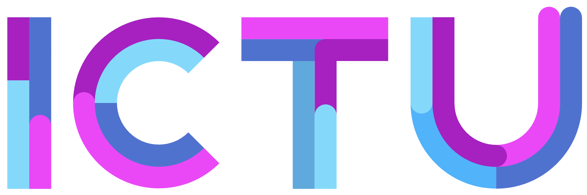

GBO / DvTP¶
Project Start Architectuur¶

Versie 0.1
Maart 2026
Auteur: Govert Claus
Organisatie: ICTU
Project Start Architectuur (PSA) - GBO¶
Welkom bij de Project Start Architectuur voor GBO. Dit document beschrijft de architectuurkaders, principes en interactiepatronen die van toepassing zijn op dit project.
Over dit document¶
Deze PSA is opgebouwd uit verschillende modules om het beheer overzichtelijk te houden. Aan de linkerkant (of via het menu bovenin) kun je door de verschillende hoofdstukken navigeren.
Kerngegevens¶
| Onderwerp | Details |
|---|---|
| Status | Concept / In review |
| Versie | 0.0.1 |
| Eigenaar | ICTU |
| GithubRep | https://github.com/Govert-Claus/GBO-DvTP |
| Pagina die als PDF afgedrukt kan worden | |
| Laatst bijgewerkt | {{ git_revision_date }} |
Leeswijzer¶
De PSA is als volgt opgebouwd:
- Inleiding: Doel en scope van dit document.
- Context: De omgeving waarin het project landt.
- Architectuurprincipes: De kaders waaraan de oplossing moet voldoen.
- Ontwerpprincipes: De kaders waaraan het technische ontwerp van de oplossing moet voldoen.
- Ecosysteem en oplossingsrichting: Het systeem (rollen en relaties) waar we naar kijken en welke oplossingsrchting we voor ogen hebben.
- Interactiepatronen: De interactiepatronen die uit de use cases volgen en die de oplossing moet ondersteunen.
- Logische architectuur: De generieke functies waar de oplossing uit bestaat.
- Capabilities: De capabiltities/ bedrijfsfuncties die de generieke functies invullen en waar het GBO stelsel inrichting aan moet geven.
- Realisatiestrategie: De strategie om de oplossing te realiseren en te implementeren.
- Vraagstukken en ontwerpkeuzes: Vraagstukken waarvoor nog geen oplossing is gevonden of keuze is gemaakt. Als er een oplossing is gevonden of een keuze is gemaakt, wordt deze in dit hoofdstuk vastgelegd als ontwerpkeuze en in het technisch ontwerp uitgewerkt.
Vragen over deze PSA kunnen gesteld worden aan de architect van het projectteam.
PSA ↵
Inleiding¶
Doel van dit document¶
Dit document beschrijft de Project Start Architectuur (PSA) voor het programma GBO (Gemeenschappelijke BronOntsluiting).
De PSA beschrijft wat de oplossing moet kunnen, maar legt nog geen technische implementatie vast.
Scope¶
De PSA beschrijft de architectuur voor een generieke infrastructuur waarmee:
- burgers gegevens van overheidsorganisaties kunnen verkrijgen
- burgers deze gegevens kunnen delen met private partijen
- gegevens gebruikt kunnen worden voor Europese toepassingen zoals EDI Wallet en SDG/OOTS
De PSA omvat:
- architectuur- en ontwerpprincipes
- generieke functies
- capabilities
- realisatiestrategie
De PSA beschrijft niet:
- concrete technische oplossingen
- implementaties van componenten
- leverancierskeuzes
Relatie met andere architecturen¶
De PSA sluit aan bij:
- NORA
- GDI
- EDI Wallet / EUDI Wallet
- Single Digital Gateway (SDG)
- Once Only Technical System (OOTS)
- Federatief Datastelsel
- ...
Context en aanleiding¶
Beleidscontext¶
Moderne dienstverlening aan burgers, zowel door overheden als private partijen, begint met vertrouwen in actuele en betrouwbare persoonsgegevens. Het beleidsdossier Regie op Gegevens richt zich, naast de regievormen inzage en eenmalige verstrekking, ook op het delen van gegevens: het mogelijk maken dat burgers hun eigen gegevens uit overheidsbronnen digitaal beschikbaar kunnen stellen aan dienstverleners of zichzelf.
Momenteel lopen er, naast vele andere trajecten, drie omvangrijke ontwikkelingen om het delen van gegevens mogelijk te maken:
-
EDI-wallet: Vanuit de eIDAS2-verordening wordt gewerkt aan de Europese Digitale Identiteit (EDIwallet). Met deze digitale portemonnee kunnen burgers zich digitaal identificeren, persoonlijke gegevens veilig delen en documenten digitaal ondertekenen – zowel bij publieke als bij private dienstverleners in Nederland en de rest van de EU.
-
SDG-OOTS: Vanuit de SDGverordening wordt gewerkt aan het Once Only Technical System (OOTS). OOTS maakt het mogelijk dat burgers (en bedrijven) een verklaring van instemming geven aan Europese publieke dienstverleners, waarna benodigde bewijsdocumenten éénmalig automatisch en veilig tussen overheidsorganisaties kunnen worden uitgewisseld.
-
DvTP: Vanuit het beleidsdossier Regie op Gegevens wordt, als reactie op het ongewenste scrapen van persoonlijke omgevingen van burgers binnen overheidswebsites (en daarmee overheidsbronnen), een oplossing ontwikkeld voor het delen van gegevens via toestemming met private dienstverleners (DvTP).
Deze drie ontwikkelingen hebben elk een eigen oorsprong, doel en reikwijdte. Wat ze gemeen hebben, is dat de gegevensdeling wordt geïnitieerd door de burger en dat daarvoor overheidsbronnen moeten worden ontsloten. Op de korte en middellange termijn staan overheidsorganisaties, de zogenoemde bronhouders, dan ook voor de opgave hun overheidsbronnen toegankelijk te maken voor deze ontwikkelingen.
Dit speelt zich af in een bredere context waarin bronhouders ook betrokken zijn bij de totstandkoming van het Federatief Datastelsel (FDS). In dit stelsel worden afspraken en standaarden voor gegevensuitwisseling binnen de overheid vastgelegd. Tegelijkertijd krijgt gegevensdeling met private partijen meer aandacht, waarvoor binnen de publiek-private samenwerking Trusted Information Partners (TIP) een afsprakenstelsel is ontwikkeld. Daarnaast maken de introductie van de Nederlandse Digitaliseringsstrategie (NDS) en de inwerkingtreding van de Europese verordening Interoperabel Europa (VIE) duidelijk dat het realiseren van nationale en Europese interoperabiliteit niet langer vrijblijvend is.
In 2025 is onderzocht of het ontsluiten van overheidsbronnen meer samenhangend en gezamenlijk kan worden opgepakt onder de noemer Gemeenschappelijke Bronontsluiting. Gemeenschappelijk benadrukt hier de collectieve aard van de opgave. Daarbij is gekeken naar één uniforme methode voor ontsluiting ten behoeve van de EDI-wallet, SDG-OOTS en DvTP, in samenhang met de ontwikkeling van FDS, TIP, NDS en (Europese) interoperabiliteit.
Huidige situatie¶
-
Onnodige administratieve lasten voor burgers en organisaties doordat dezelfde gegevens herhaaldelijk worden opgevraagd en aangeleverd.
-
Risicovolle werkpraktijken (documentuitwisseling, datadeler-apps, scraping) die niet passen bij een gecontroleerde, transparante en uniforme keten.
-
Beperkte innovatie en dienstverlening doordat hergebruik van geverifieerde brongegevens richting private diensten niet goed mogelijk is, terwijl de maatschappelijke behoefte hieraan groeit.
(zie probleemomschrijving in Beleidskompas)
Probleemstelling¶
Het delen van persoonsgegevens ondervindt op dit moment de volgende problemen:
-
Geheimhoudingsplichten en strikte doelbinding in sectorale wetten
-
Ontbreken van een expliciete bevoegdheid om aan private dienstverleners te verstrekken op verzoek van de burger
-
Toestemming van de burger is in de overheid-context vaak geen stevige grondslag
-
Versnippering van regels en verantwoordelijkheden over sectoren en organisaties
-
Omwegen in de praktijk door frictie tussen behoefte en wat juridisch/operationeel kan
-
Scraping en vergelijkbare vormen van geautomatiseerd verzamelen vergroten risico’s en zijn juridisch kwetsbaar
Doelstelling¶
Om de problemen uit de vorige paragraaf op te lossen wordt een stelsel (een verzameling afspraken, standaarden, stelselfuncties en voorzieningen) voorgesteld, waarin het mogelijk is dat:
-
burgers toestemming geven en beheren via een vertrouwde overheidsomgeving, op basis van begrijpelijke informatie over doel, gegevens en ontvanger;
-
private dienstverleners alleen gegevens opvragen binnen de afgesproken reikwijdte en de burger terugkoppelen welke gegevens zijn ontvangen en gebruikt;
-
bronhouders alleen verstrekken na verificatie van een geldig verzoek en binnen een afgebakend doel, met waarborgen voor integriteit en herleidbaarheid.
De doelstellingen van het GBO stelsel zijn:
-
Een lagere implementatielast voor bronhouders
-
Het voorkomen van maatwerk en ad-hoc-implementaties
-
Effectiever hergebruik van generieke voorzieningen
-
Samenhangende afsprakenstelsels die samenwerking tussen stelsels vereenvoudigen
-
Meer uniformiteit en interoperabiliteit tussen overheden, en overheid en private partijen
Architectuurprincipes GBO — Gegevensuitwisseling¶
Overzicht van de meest relevante architectuurprincipes voor het GBO-stelsel, gegroepeerd per juridisch/beleidskader. Bedoeld als input voor de PSA.
Kader 1 — AVG (Algemene Verordening Gegevensbescherming)¶
P-01 · Grondslag vóór uitwisseling¶
Stelling: Elke gegevensuitwisseling vereist een expliciete wettelijke grondslag en doelbinding, die vooraf door de afnemer worden vastgesteld en aantoonbaar gemaakt.
Bronnen: - AVG art. 5 & 6 - NORA Domeinarchitectuur Gegevensuitwisseling §4.2 - NORA NAP05 — Nauwkeurig
P-02 · Minimale gegevensverwerking (dataminimalisatie)¶
Stelling: Er worden niet meer persoonsgegevens uitgewisseld dan strikt noodzakelijk voor het doel. Het stelsel levert attributen, niet ruwe (basis)registratie-dumps.
Bronnen: - AVG art. 5 lid 1 sub c - NORA NAP07 — Minimale gegevensverwerking
P-03 · Privacy by design & by default¶
Stelling: Privacybeschermende maatregelen — waaronder pseudonimisering — zijn ingebakken in het ontwerp van het stelsel, niet achteraf toegevoegd.
Bronnen: - AVG art. 25 - NORA Domeinarchitectuur Gegevensuitwisseling §4.2
P-12 · Logging & onweerlegbaarheid van gegevensuitwisselingen¶
Stelling: Elke (poging tot) gegevensuitwisseling wordt gelogd (metadata van verzending en ontvangst) zodat achteraf aantoonbaar is dat uitwisselingen hebben plaatsgevonden en door wie.
Bronnen: - AVG art. 5 lid 2 (verantwoordingsplicht) - NORA Domeinarchitectuur Gegevensuitwisseling §4.2 - BIO (Baseline Informatiebeveiliging Overheid)
P-13 · Transparantie & inzage voor de burger¶
Stelling: De burger heeft recht op inzage in welke gegevens over hem zijn uitgewisseld, met wie en op welke grondslag. Het stelsel ondersteunt dit via een inzageloket (Regie op Gegevens).
Bronnen: - AVG art. 13–15 (informatieplicht, inzagerecht) - Programma Regie op Gegevens (BZK) - NORA BP03 — Ontvanger is op de hoogte
Kader 2 — NORA (Nederlandse Overheids Referentie Architectuur)¶
P-08 · Eenmalige vastlegging, meervoudig gebruik (EV-MG)¶
Stelling: Gegevens worden eenmalig bij de bron vastgelegd en vanuit die bron hergebruikt. Het stelsel bevordert gegevensdeling in plaats van gegevenskopiëren.
Bronnen: - NORA BP08 — Gebruik open standaarden - NORA NAP10 — Neem gegevens als fundament - FDS-architectuurprincipes
P-09 · Open standaarden & leveranciersonafhankelijkheid¶
Stelling: Het stelsel maakt gebruik van open standaarden (OAuth 2.0, REST/GraphQL, Digikoppeling, OID4VC) van de Forum Standaardisatie 'pas toe of leg uit'-lijst, zodat vendor lock-in wordt voorkomen.
Bronnen: - NORA Domeinarchitectuur Gegevensuitwisseling §4.2 - Forum Standaardisatie (lijsten verplichte/aanbevolen standaarden) - EU Data Act hfst. VIII (interoperabiliteit)
P-11 · FAIR-principes voor gegevens¶
Stelling: Gegevens in het stelsel zijn voorzien van metadata die ze vindbaar en herbruikbaar maakt conform de FAIR-principes, inclusief semantische standaarden (GGM, RDF, SHACL).
Bronnen: - FAIR-principes (Wilkinson et al., 2016) - NORA NAP10 — Neem gegevens als fundament - FDS-architectuurprincipes
P-14 · Scheiding van generieke en niet-generieke functies¶
Stelling: Het GBO beperkt zich tot generieke functies die overheidsbreed noodzakelijk zijn. Domeinspecifieke functionaliteit is de verantwoordelijkheid van de betreffende sector of partij.
Bronnen: - NORA subsidiariteitsbeginsel - GDI-Architectuur Basisprincipes (Bureau MIDO) - Architectuur Digitale Overheid 2030
P-15 · Ontkoppeling voor wendbaarheid en robuustheid¶
Stelling: Afnemers, de generieke kern en bronhouders zijn technisch ontkoppeld via gestandaardiseerde API-koppelvlakken, zodat componenten onafhankelijk kunnen worden doorontwikkeld en vervangen.
Bronnen: - GDI-Architectuur Basisprincipes — "Gebruik van flexibele en ontkoppelde functies" - NORA BP09 — Pas open standaarden toe
Kader 3 — Wet digitale overheid (Wdo) & PKI¶
P-05 · Erkende authenticatiemiddelen op passend betrouwbaarheidsniveau¶
Stelling: Toegang tot het stelsel vereist een erkend inlogmiddel (DigiD, eHerkenning, EUDIW) op het betrouwbaarheidsniveau dat past bij het risiconiveau van de dienst.
Bronnen: - Wet digitale overheid (Wdo) 2023 - eIDAS Verordening (EU) 2024/1183 - NORA Authenticatie(middelen)beheer
P-07 · Vertrouwensstelsel op basis van PKI en erkende toetredingseisen¶
Stelling: Alle deelnemende partijen (bronhouders, afnemers, private partijen) voldoen aan toetredingseisen en zijn aantoonbaar betrouwbaar via PKIoverheid-certificaten en/of het TIP-stelsel.
Bronnen: - PKIoverheid-stelsel - Wet digitale overheid (Wdo) - Afsprakenstelsel ETD (eHerkenning)
Kader 4 — eIDAS2 & Europese digitale identiteit¶
P-06 · Ondersteuning van de Europese digitale identiteitswallet (EUDIW)¶
Stelling: Het stelsel is ontworpen om in de toekomst attributen uit te wisselen via de EU Digital Identity Wallet (OID4VC/OID4VP), zodat grensoverschrijdende dienstverlening (SDG/OOTS) mogelijk is.
Bronnen: - eIDAS2 Verordening (EU) 2024/1183 - EU Architecture Reference Framework (ARF) - Single Digital Gateway (SDG) Verordening
Kader 5 — EU Data Governance Act (DGA) & Data Act¶
P-10 · Datasoevereiniteit: de bronhouder behoudt regie¶
Stelling: Bronhouders behouden volledige zeggenschap over hun gegevens en de condities waaronder die worden ontsloten. Het GBO faciliteert ontsluiting maar neemt geen eigenaarschap.
Bronnen: - EU Data Governance Act (DGA) Verordening 2022/868 - FDS Design Principles for Data Spaces — principe 1 - NORA Domeinarchitectuur Gegevensuitwisseling §4.2
P-16 · Eerlijke en niet-discriminerende toegang voor private partijen¶
Stelling: Private partijen kunnen deelnemen aan het stelsel onder transparante, proportionele en niet-discriminerende toetredingsvoorwaarden, mits zij voldoen aan de gestelde beveiligings- en privacynormen en géén BSN verwerken.
Bronnen: - EU Data Governance Act art. 5 (condities hergebruik) - Wabb art. 10 (BSN-verbod private partijen) - DvTP-kader (Digitale Verwerking Toestemming Private partijen)
Kader 6 — Wet algemene bepalingen BSN (Wabb) & Regie op Gegevens¶
P-04 · BSN-loos voor private afnemers (pseudonimisering)¶
Stelling: Private partijen mogen het BSN niet verwerken (Wabb art. 10). Het GBO levert aan private afnemers uitsluitend sectorale of context-specifieke pseudoniemen; de BSN-koppeling blijft binnen de vertrouwde kern.
Bronnen: - Wet algemene bepalingen BSN (Wabb) art. 10 - AVG art. 25 (pseudonimisering) - BSNk / Polymorfe pseudonimisering
Overzichtstabel¶
| ID | Principe | Cluster | Primair kader |
|---|---|---|---|
| P-01 | Grondslag vóór uitwisseling | Privacy & gegevensbescherming | AVG |
| P-02 | Minimale gegevensverwerking | Privacy & gegevensbescherming | AVG |
| P-03 | Privacy by design & by default | Privacy & gegevensbescherming | AVG |
| P-04 | BSN-loos voor private afnemers | Privacy & gegevensbescherming | Wabb / AVG |
| P-05 | Erkende authenticatiemiddelen op passend niveau | Identiteit & vertrouwen | Wdo / eIDAS2 |
| P-06 | Ondersteuning EUDIW | Identiteit & vertrouwen | eIDAS2 / ARF |
| P-07 | Vertrouwensstelsel PKI & toetredingseisen | Identiteit & vertrouwen | Wdo / PKI |
| P-08 | Eenmalige vastlegging, meervoudig gebruik | Gegevensuitwisseling | NORA / FDS |
| P-09 | Open standaarden & leveranciersonafhankelijkheid | Gegevensuitwisseling | NORA / Data Act |
| P-10 | Datasoevereiniteit: bronhouder behoudt regie | Gegevensuitwisseling | DGA / Data Act |
| P-11 | FAIR-principes voor gegevens | Gegevensuitwisseling | NORA / FAIR |
| P-12 | Logging & onweerlegbaarheid | Logging, audit & transparantie | AVG / NORA |
| P-13 | Transparantie & inzage voor de burger | Logging, audit & transparantie | AVG / Regie op Gegev. |
| P-14 | Scheiding generieke en niet-generieke functies | Architectuur & governance | NORA / GDI |
| P-15 | Ontkoppeling voor wendbaarheid en robuustheid | Architectuur & governance | NORA / GDI |
| P-16 | Eerlijke toegang voor private partijen | Architectuur & governance | DGA / Wabb / DvTP |
Ontwerpprincipes GBO — Gegevensuitwisseling¶
Selectie van de meest relevante ontwerpprincipes voor de inrichting van het GBO-stelsel. Waar de architectuurprincipes de wat en waarom beschrijven, geven deze ontwerpprincipes richting aan de hoe — de concrete keuzes bij het bouwen van het stelsel.
Kader 1 — GDI / Gemeenschappelijke Overheidsarchitectuur (GA)¶
D-01 · Decentraal wat kan, centraal wat moet¶
Betekenis: Taken, bevoegdheden en voorzieningen worden belegd op het laagst mogelijke niveau dat nog doelmatig en doeltreffend is. Centrale voorzieningen worden alleen ingericht als decentrale alternatieven aantoonbaar onvoldoende zijn — bijvoorbeeld vanwege schaalniveau, interoperabiliteitseisen of beveiligingsrisico's. Voor de GBO betekent dit: generieke functies (authenticatie, toegang, bronontsluiting) mogen centraal; domeinspecifieke functies blijven bij de betrokken partij.
Toelichting voor GBO: Bronhouders beheren zelf hun gegevens. Het GBO biedt een centrale integratielaag, maar geen centrale gegevensopslag. Keuzes voor centrale voorzieningen worden expliciet gemotiveerd.
Bronnen: - Gemeentewet art. 117 lid 2 / Provinciewet art. 115 lid 2 (subsidiariteitsbeginsel) - Code Interbestuurlijke Verhoudingen — "Decentraal wat kan, centraal wat moet" - GDI-Meerjarenvisie 2024–2028 (Bureau MIDO / BZK) - Architectuur Digitale Overheid 2030
D-02 · Afspraken gaan boven standaarden, standaarden gaan boven voorzieningen¶
Betekenis: De voorkeursvolgorde bij het realiseren van een generieke functie is: 1. Afspraken — onderlinge afspraken tussen partijen zijn de lichtste en meest flexibele vorm; 2. Standaarden — als afspraken onvoldoende zijn, wordt een formele standaard vastgesteld; 3. Voorzieningen — pas als standaarden niet volstaan, wordt een gedeelde technische voorziening ingericht.
Dit principe voorkomt dat er onnodig zware centrale voorzieningen worden gebouwd die innovatie remmen en afhankelijkheden creëren.
Toelichting voor GBO: Kies bij elke nieuwe GBO-functie eerst de lichtste adequate oplossing. Sla stappen niet over. Documenteer waarom een hogere trede nodig is.
Bronnen: - GA Basisprincipes — principe D (NORA Online / Bureau MIDO) - MIDO-kader 2024 — principe "afspraken boven standaarden boven voorzieningen" - GDI Meerjarenvisie 2024–2028, §4 (principe U) - Computable / Manifestgroep: 'Afspraken boven standaarden boven voorzieningen' (2017) - Digitaleoverheid.nl — GDI-beschrijving bouwstenentypen
D-03 · Gebruik landelijke generieke voorzieningen (GDI-bouwstenen) tenzij…¶
Betekenis: Overheidsorganisaties maken bij voorkeur gebruik van beschikbare GDI-bouwstenen (DigiD, eHerkenning, Digikoppeling, MijnOverheid, etc.) in plaats van eigen parallelle voorzieningen te bouwen. Afwijken is alleen toegestaan als de GDI-bouwsteen aantoonbaar niet voldoet aan de functionele of wettelijke eisen, en wordt gemotiveerd conform 'pas toe of leg uit'.
Toelichting voor GBO: Voor authenticatie: DigiD / eHerkenning / EUDIW. Voor transport: Digikoppeling REST-profiel. Voor gegevensuitwisseling: Digilevering/Digipoort waar van toepassing. Eigen voorzieningen zijn aanvullend, niet vervangend.
Bronnen: - GDI-Meerjarenvisie 2024–2028 (Bureau MIDO) - GDI Programmeringsplan 2024 (Rijksoverheid / MIDO) - Digitaleoverheid.nl — GDI bouwstenoverzicht - NORA — gebruik generieke bouwstenen (BP07)
D-04 · Robuust, modulair en flexibel ontwerp¶
Betekenis: Het stelsel is opgebouwd uit losgekoppelde, vervangbare modules met heldere interfaces. Elk component kan onafhankelijk worden doorontwikkeld of vervangen zonder andere componenten te raken. Het stelsel heeft geen single point of failure en is ontworpen op continuïteit.
Toelichting voor GBO: Pas een gelaagde componentarchitectuur toe (vergelijkbaar met het Common Ground 5-lagenmodel). Definieer expliciete API-contracten tussen lagen. Sla geen gegevens op die ook real-time bij de bron bevraagd kunnen worden.
Bronnen: - GA Basisprincipes — principe V (Bureau MIDO) - GDI-Meerjarenvisie 2024–2028 - Common Ground 5-lagenmodel (VNG Realisatie / GEMMA)
Kader 2 — Common Ground (VNG / GEMMA)¶
D-05 · Gegevens bij de bron — geen onnodige kopieën¶
Betekenis: Gegevens worden zoveel mogelijk real-time bevraagd bij de bronhouder via API's, in plaats van gekopieerd naar lokale registers of tussenopslagplaatsen. Kopieën zijn tijdelijke uitzonderingen die expliciet worden gemotiveerd (bijv. technische onmogelijkheid van real-time bevraging) en worden beheerst.
Toelichting voor GBO: Het GBO fungeert als integratielaag, niet als gegevensmagazijn. Bronhouders (BRP, Belastingdienst, UWV, DUO, BAG/BRK) worden bevraagd via de generieke bronontsluiting-API. Tussenopslag is alleen toegestaan als performance of beschikbaarheid dit vereist, met expliciete AVG-grondslag.
Bronnen: - Common Ground informatiearchitectuurprincipes (VNG Realisatie / GEMMA Online) - Common Ground Propositie 2024 (VNG) - Haal Centraal-programma (VNG Realisatie) — "bevragen bij de bron" - developer.overheid.nl — Vorderingenoverzicht Rijk (casestudy)
D-06 · Componentgebaseerd werken — herbruikbare bouwstenen¶
Betekenis: Functionaliteit wordt opgesplitst in kleine, herbruikbare componenten die elk één verantwoordelijkheid hebben (single responsibility). Componenten zijn interoperabel via gestandaardiseerde API's en kunnen door verschillende afnemers worden hergebruikt zonder afhankelijkheid van één leverancier.
Toelichting voor GBO: Denk aan afzonderlijke componenten voor: authenticatie, toestemmingsbeheer, bronontsluiting per registratie, pseudoniemvertaling, logging. Elk component heeft een eigen beheerder en een stabiel API-contract.
Bronnen: - Common Ground realisatieprincipes (VNG Realisatie / commonground.nl) - Common Ground 5-lagenmodel (GEMMA Online) - GEMMA Informatiearchitectuur — "maximaal openstellen voor hergebruik"
D-07 · Open source tenzij er zwaarwegende redenen zijn om dat niet te doen¶
Betekenis: Componenten en standaarden worden bij voorkeur als open source ontwikkeld en gepubliceerd, zodat samenwerking, hergebruik en transparantie worden bevorderd. Hierdoor neemt de kans op vendor lock-in af en kunnen marktpartijen en andere overheden bijdragen.
Bronnen: - Common Ground realisatieprincipes — "Open Source Software wordt gestimuleerd" - GEMMA Informatiearchitectuur - Werkagenda Waardengedreven Digitaliseren (BZK)
Kader 3 — Forum Standaardisatie / Kennisplatform API's¶
D-08 · Pas toe of leg uit — verplichte open standaarden¶
Betekenis: Overheidsorganisaties zijn verplicht de open standaarden op de 'pas toe of leg uit'-lijst van Forum Standaardisatie toe te passen. Afwijken is alleen toegestaan als er een zwaarwegende en gedocumenteerde reden is. Voor het GBO gelden in elk geval als verplicht: REST API Design Rules, NL GOV OAuth 2.0-profiel, NL GOV OIDC-profiel, Digikoppeling, en — zodra beschikbaar — OID4VC/OID4VP.
Toelichting voor GBO: Neem in het stelselontwerp een expliciete mapping op van GBO-koppelvlakken naar verplichte standaarden. Documenteer elk koppelvlak dat afwijkt van de 'pas toe'-standaard.
Bronnen: - Forum Standaardisatie — 'Pas toe of leg uit'-lijst - Logius API-standaarden: REST API Design Rules, NL GOV OAuth 2.0, NL GOV OIDC - GDI-Meerjarenvisie 2024–2028 — collectieve voorzieningen "pas toe of leg uit" - NORA BP09 — Pas open standaarden toe
D-09 · API-first — ontsluiting via gestandaardiseerde API's¶
Betekenis: Elke GBO-functie en elke bronontsluiting wordt primair aangeboden als een goed gedocumenteerde, versie-beheerde API. De API is het primaire koppelvlak; gebruikersinterfaces en batchprocessen zijn secundair. API's worden ontworpen conform de NLGov REST API Design Rules.
Toelichting voor GBO — REST vs. GraphQL: De NLGov REST API Design Rules zijn verplicht ('pas toe of leg uit') voor REST-API's. GraphQL valt buiten deze verplichting maar is niet verboden. Een keuze voor GraphQL vereist: - Expliciete motivatie (bijv. flexibele selectie van attributen reduceert dataminimalisatierisico's); - Aantoonbare naleving van vergelijkbare beveiligings-, autorisatie- en auditprincipes; - Documentatie conform OpenAPI Specification of vergelijkbaar schema.
Overweeg een hybride aanpak: REST-endpoints voor standaard bevragingen (conform verplichte standaard), GraphQL voor flexibele attribuutselectie door afnemers.
Bronnen: - NLGov REST API Design Rules (Forum Standaardisatie, verplicht 'pas toe of leg uit' — Logius) - Kennisplatform API's (developer.overheid.nl) - Common Ground — "generieke API voor aansluiting" - EU Open Data Richtlijn — API-verplichting voor overheidsdata (art. 5)
Kader 4 — Informatiebeveiliging & Privacy (BIO / AVG / NIS2)¶
D-10 · Informatiebeveiliging en privacy by design¶
Betekenis: Beveiligings- en privacymaatregelen worden vanaf het eerste ontwerp ingebakken in het stelsel — niet achteraf toegevoegd als laag. Dit omvat: minimale gegevensverwerking, pseudonimisering, toegangsbeperking op need-to-know-basis, encryptie in transit en at rest, en expliciete beveiligingsarchitectuur per component.
Toelichting voor GBO: Voer voor elk nieuw component een Data Protection Impact Assessment (DPIA) uit. Stel een expliciete beveiligingsclassificatie vast per gegevenstype. Ontwerp de toegangslaag op basis van zero-trust-principes (geen impliciete vertrouwensrelaties tussen componenten).
Bronnen: - AVG art. 25 — privacy by design & by default - BIO2 (Baseline Informatiebeveiliging Overheid 2) — gebaseerd op ISO/IEC 27001:2022 & 27002:2022 - GA Basisprincipes — principe H (privacy by design, security by design) - NIS2-richtlijn (EU) 2022/2555 — verplichting beveiligingsmaatregelen vitale infrastructuur - Cyberbeveiligingswet (Cbw, implementatie NIS2)
D-11 · Least privilege — toegang op basis van minimale rechten¶
Betekenis: Elke afnemer, component en beheerder krijgt uitsluitend de toegang die strikt noodzakelijk is voor de uit te voeren taak. Autorisaties zijn granulaar, tijdgebonden en worden actief ingetrokken als ze niet meer nodig zijn. Er zijn geen statische 'admin'-accounts met brede rechten.
Toelichting voor GBO: Implementeer OAuth 2.0-scopes per API-endpoint en per gegevenstype. Koppel autorisaties aan grondslag en doelbinding (zie architectuurprincipe P-01). Log elke autorisatiebeslissing.
Bronnen: - BIO2 — toegangsbeheer (ISO 27002 domein 8) - NL GOV Assurance profile for OAuth 2.0 (Logius) - AVG art. 5 lid 1 sub b (doelbinding) & sub c (dataminimalisatie)
D-12 · Aantoonbare veiligheid — audit en pen-testing¶
Betekenis: De beveiliging van het stelsel wordt periodiek getoetst door onafhankelijke audits en penetratietests. Bevindingen worden transparant gerapporteerd en aantoonbaar opgevolgd. Het stelsel voldoet aan de BIO2-normen en — voor vitale functies — aan de eisen van de Cyberbeveiligingswet.
Bronnen: - BIO2 (Baseline Informatiebeveiliging Overheid 2) — risicomanagement & audit - NIS2-richtlijn / Cyberbeveiligingswet — zorgplicht en meldplicht - ISO/IEC 27001:2022 — ISMS-certificering
Kader 5 — NORA¶
D-13 · Standaardiseer waar mogelijk, maak uitzonderingen expliciet¶
Betekenis: Hergebruik van bestaande standaarden, patronen en voorzieningen heeft sterk de voorkeur boven het ontwikkelen van nieuwe oplossingen. Als een uitzondering nodig is, wordt deze gedocumenteerd als architectuurbeslissing (ADR — Architecture Decision Record) met een onderbouwde motivatie.
Toelichting voor GBO: Stel een ADR-register bij als onderdeel van de GBO-documentatie. Elke afwijking van een verplichte standaard of een vastgesteld architectuurprincipe krijgt een eigen ADR met: context, beslissing, overwogen alternatieven, en consequenties.
Bronnen: - NORA BP09 — Pas open standaarden toe - NORA Architectuurprincipes (noraonline.nl) - GA Basisprincipes — principe D & H (Bureau MIDO)
D-14 · Interoperabiliteit — semantische en technische afstemming¶
Betekenis: Gegevens die het GBO uitwisselt, zijn semantisch eenduidig gedefinieerd via vastgestelde informatiemodellen (GGM, NEN3610, IMGeo, etc.) en ontologieën (RDF/SHACL). Technische koppelvlakken zijn gedocumenteerd conform OpenAPI Specification. Hierdoor kunnen afnemers gegevens machineleesbaar verwerken zonder handmatige interpretatie.
Bronnen: - NORA Domeinarchitectuur Gegevensuitwisseling — semantiek & validatie - Gemeentelijk Gegevensmodel (GGM) — VNG - Forum Standaardisatie — standaarden voor semantische interoperabiliteit - EU Interoperabiliteitsraamwerk (EIF) / Interoperable Europe Act
Overzichtstabel¶
| ID | Principe | Cluster | Primair kader |
|---|---|---|---|
| D-01 | Decentraal wat kan, centraal wat moet | Governance & organisatie | GDI / GA / Gemeentewet |
| D-02 | Afspraken > standaarden > voorzieningen | Governance & organisatie | GDI / GA (MIDO) |
| D-03 | Gebruik landelijke GDI-bouwstenen tenzij… | Governance & organisatie | GDI / NORA |
| D-04 | Robuust, modulair en flexibel ontwerp | Technische architectuur | GDI / Common Ground |
| D-05 | Gegevens bij de bron — geen onnodige kopieën | Gegevensarchitectuur | Common Ground / NORA |
| D-06 | Componentgebaseerd werken — herbruikbare bouwstenen | Technische architectuur | Common Ground (VNG) |
| D-07 | Open source tenzij zwaarwegende redenen | Technische architectuur | Common Ground / BZK |
| D-08 | Pas toe of leg uit — verplichte open standaarden | Standaarden & koppelvlakken | Forum Standaardisatie |
| D-09 | API-first — NLGov REST API Design Rules (en GraphQL-afweging) | Standaarden & koppelvlakken | Forum Standaardisatie / EU |
| D-10 | Informatiebeveiliging en privacy by design | Beveiliging & privacy | BIO2 / AVG / NIS2 |
| D-11 | Least privilege — toegang op basis van minimale rechten | Beveiliging & privacy | BIO2 / OAuth / AVG |
| D-12 | Aantoonbare veiligheid — audit en pen-testing | Beveiliging & privacy | BIO2 / NIS2 / Cbw |
| D-13 | Standaardiseer waar mogelijk, uitzonderingen expliciet (ADR) | Kwaliteit & beheersbaarheid | NORA / GA |
| D-14 | Interoperabiliteit — semantische en technische afstemming | Kwaliteit & beheersbaarheid | NORA / EIF |
Noot: REST vs. GraphQL voor het GBO¶
De NLGov REST API Design Rules staan verplicht op de 'pas toe of leg uit'-lijst en zijn van toepassing als REST wordt ingezet. De standaard verplicht het gebruik van REST zelf niet — het gebruik van GraphQL is daarmee formeel niet in strijd.
Voor het GBO is een hybride aanpak verdedigbaar:
| Criterium | REST (NLGov ADR) | GraphQL |
|---|---|---|
| Verplichte standaard | Ja (bij gebruik van REST) | Nee (geen verplichte NL Gov-standaard) |
| Dataminimalisatie | Vaste response-structuur | Client selecteert exact benodigde velden |
| Beveiligingsvolwassenheid | Hoog (OAuth 2.0-profiel beschikbaar) | Gemiddeld (vereist extra scope-mapping) |
| Tooling & ecosystem | Breed beschikbaar | Breed, maar minder overheid-specifiek |
| Aanbeveling GBO | Standaard externe ontsluiting | Optioneel voor interne/flexibele queries |
Ecosysteem en oplossingsrichting¶
Actoren¶
De volgende actoren spelen een rol bij het delen van gegevens in de context die eerder is beschreven:
- Burger
De burger is de persoon om wiens gegevens het gaat en die de gegevens wil gebruiken om een dienst af te kunnen nemen. De burger is echter niet de eigenaar van de gegevens: dat is de bronhouder. Om de gegevens van de bronhouder te gebruiken moet de burger daartoe toestemming geven, of moet er sprake zijn van een andere grondslag.
- Bronhouder
De bronhouder is de eigenaar en beheerder van de gegevens. Deze gegevens zijn verzameld voor een bepaald doel en mogen alleen voor een ander doel gebruikt worden als de burger daartoe toestemming heeft gegeven. In sommige gevallen is zelfs dat niet mogelijk en moet er mogelijk wet- en regelgeving aangepast worden.
- Wallet
De Wallet is een voorziening (vaak een mobiele app) waarmee de burger eigen persoonsgegevens in digitale en gewaarmerkte vorm kan beheren en kan hergebruiken. De feitelijke actor is dus de burger, maar nu in de rol van gegevensverwerker.
- Private partij
De private partij is een organisatie die een dienst aan de burger levert en daarvoor persoonsgegevens nodig heeft. Deze gegevens komen uit een overheidsbron, waar de private partij geen rechtstreekse toegang toe heeft.
- SDG/OOTS
SDG/OOTS (Single Digital Gateway / Once Only Technical System) is een Europese voorziening waarmee Europese overheden gegevens uit overheidsbronnen van andere Europese lidstaten kan opvragen. De feitelijke actor is dan de overheidsfunctionaris die een persoonsgegeven nodig heeft voor het leveren van een dienst aan een burger die in het buitenland is.
- GBO stelsel
Om de gegevens uit te wisselen zijn afspraken nodig en mogelijk een of enkele voorzieningen. Deze afspraken en eventuele voorzieningen worden beheerd in een stelsel. In dit document wordt dit stelsel het "GBO stelsel" genoemd, maar in de praktijk is het de bedoeling dat de afspraken en eventuele voorzieningen worden ondergebracht bij bestaande stelsel en/ of organisaties.
Contextdiagram¶
In de contextdiagram worden de actoren ten opzichte van elkaar en van het GBO stelsel geschetst.
flowchart LR
Bronhouder
DvTP["GBO stelsel
(afspraken, standaarden, voorzieningen)"]
Wallet
Privaat["Private partij"]
SDG["SDG/OOTS"]
Bronhouder --> DvTP
DvTP --> Wallet
DvTP --> Privaat
DvTP --> SDG
Oplossingsrichting¶
Zoals in de contextdiagram wordt geschetst worden de gegevens van de bronhouder via het GBO stelsel voor drie doelen gebruikt. Dit ontlast de bronhouder en maakt hergebruik van gegevens eenvoudiger. Ook als er meer doelen bijkomen vormt deze opzet een oplossing die hergebruikt kan worden.
Om deze oplossing mogelijk te maken zal het stelsel een aantal interactiepatronen moeten ondersteunen. Het achterhalen van deze interactiepatronen gebeurt via use cases, die in de bijlage zijn uitgewerkt. De interactiepatronen worden in het volgende hoofdstuk besproken.
In het volgende hoofdstuk worden eerst de kaders van de oplossing besproken: de architectuur- en ontwerpprincipes waar de oplossing rekening mee moet houden.
Interactiepatronen DvTP (PSA)¶
Dit document beschrijft de belangrijkste interactiepatronen voor GBO zoals afgeleid uit de use cases. In de patronen is op verschillende plekken sprake van een "dienst"; dit kunnen standaarden of centrale of decentrale voorzieningen zijn. Daar wordt verderop in de PSA dieper op ingegaan.
Gegevensverzoek van private partij met toestemming aan bronhouder (DvTP)¶
Doel¶
Een private dienstverlener haalt gegevens op bij een bronhouder op basis van een geldige toestemming van de burger.
Betrokken generieke functies¶
- Autorisatie & Beleidsafdwinging
- Gegevensvoorziening
- Orkestratie & Integratie
- Logging & Verantwoording
Actoren¶
- Private dienstverlener
- Integrator (optioneel)
- Autorisatievoorziening
- Consentregister
- Bronhouder
Interactie¶
sequenceDiagram
actor Burger
participant DV as Dienstverlener<br/>(privaat / EU-overheid)
participant GBO as GBO<br/>toestemmingscheck + ontsluiting
participant Bron as Bronhouder<br/>overheidsbron
participant TR as Transformatie<br/>formaat afnemer
DV->>Burger: 1. Vraag toestemming<br/>(redirect naar overheidsportaal)
Burger->>GBO: 2. Authenticatie DigiD<br/>+ toestemming verlenen
GBO-->>DV: 3. Toestemmingstoken<br/>(OAuth 2.0 / consent token)
DV->>GBO: 4. Gegevensverzoek<br/>+ toestemmingstoken + mTLS
GBO->>GBO: 5. Valideer token<br/>(geldig? scope? TTL?)
GBO->>Bron: 6. Ophaalverzoek<br/>(OAuth 2.0 · REST/GraphQL)
Bron-->>GBO: 7. Gegevens<br/>(gezegeld door bronhouder)
GBO->>TR: 8. Transformeer naar<br/>afnemerformaat
alt DvTP (private partij)
TR-->>DV: 9a. REST/GraphQL response<br/>(eigen formaat)
else SDG/OOTS (EU overheid)
TR-->>DV: 9b. AS4 / eDelivery<br/>(SDG evidence format)
end
Gegevensverzoek van burger om credential via wallet te delen¶
Doel¶
Een burger vraagt een gegeven op als credential om in zijn/haar wallet op te nemen en te delen met een dienstverlener.
Betrokken generieke functies¶
- Autorisatie & Beleidsafdwinging
- Gegevensvoorziening
- Orkestratie & Integratie
- Logging & Verantwoording
Actoren¶
- Burger
- Dienstverlener
- Integrator (optioneel)
- Autorisatievoorziening
- Bronhouder
Interactie¶
sequenceDiagram
actor Burger
participant Wallet as EDI-Wallet<br/>of portaal
participant GBO as GBO<br/>bronontsluiting
participant Bron as Overheidsbron
participant DV as Dienstverlener
Burger->>Wallet: 1. Vraag attribuut op
Wallet->>GBO: 2. Ophaalverzoek<br/>(OID4VCI / REST)
GBO->>Bron: 3. Bevraag bron<br/>(OAuth 2.0 · API)
Bron-->>GBO: 4. Gegevens<br/>(gesigneerd / gezegeld)
GBO-->>Wallet: 5. Attribuut / credential<br/>(SD-JWT VC · ISO 18013-5)
Wallet-->>Burger: 6. Credential opgeslagen
Burger->>DV: 7. Deel credential<br/>(OID4VP)
Gegevensverzoek van Europese overheidsdienst aan Nederlandse overheidsbron¶
Doel¶
Een Europese overheidsdienst vraagt een gegeven (Evidence Request) aan een Nederlandse overheidsbron om een dienst aan een Nederlandse burger te kunnen leveren.
Betrokken generieke functies¶
- Autorisatie & Beleidsafdwinging
- Gegevensvoorziening
- Orkestratie & Integratie
- Logging & Verantwoording
Actoren¶
- Burger
- Europese overheidsdienst
- Autorisatievoorziening
- Bronhouder
Interactie¶
sequenceDiagram
autonumber
participant EU as EU dienst<br/>(SDG/OOTS)
participant RINIS as RINIS<br/>(nationaal OOTS-punt)
participant GBO as GBO<br/>(GBO voorziening)
participant BRG as Burger<br/>(rechthebbende)
participant BRH as Bronhouder<br/>(BRP / DUO / …)
rect rgb(230, 241, 251)
Note over EU,RINIS: ① Ontvangst OOTS-verzoek (eDelivery/AS4)
EU->>RINIS: Evidence Request (eDelivery/AS4)
Note over RINIS: eDelivery → REST ontkoppeling
end
rect rgb(250, 238, 218)
Note over RINIS,GBO: ② Doorzetten naar GBO (nationaal)
RINIS->>GBO: OOTS-payload (REST/JSON)
end
rect rgb(238, 237, 254)
Note over GBO,BRG: ③ Toestemming burger (DvTP)
GBO->>BRG: Toestemmings-UI (DvTP)
BRG->>GBO: Toestemming + BSN
end
rect rgb(250, 238, 218)
Note over GBO: ④ Identiteit & grondslag (intern GBO)
Note over GBO: BSN · pseudonimisering · AVG/grondslag
end
rect rgb(225, 245, 238)
Note over GBO,BRH: ⑤ Bronontsluiting (GBO generieke API)
GBO->>BRH: OAuth 2.0 API-aanroep (GBO-formaat)
BRH->>GBO: Gegevens (JSON/REST)
end
rect rgb(250, 238, 218)
Note over GBO: ⑥ Semantische mapping & logging (intern GBO)
Note over GBO: GBO-formaat → SDG Evidence type · audit log · doelbinding
end
rect rgb(230, 241, 251)
Note over GBO,EU: ⑦ Terugkoppeling via RINIS naar EU
GBO->>RINIS: Evidence Response (REST/JSON)
Note over RINIS: REST → eDelivery inpakken
RINIS->>EU: Evidence Response (AS4/eDelivery)
end
Toelichting¶
RINIS is het nationale toegangspunt voor eDelivery en verzorgt de basisinrichting OOTS — het Nederlandse toegangspunt en de generieke koppelingen met gerelateerde systemen. Dit is een transportrol: RINIS spreekt het AS4/eDelivery-protocol richting de EC Common Services, en vertaalt dit naar een nationaal berichtformaat.
GBO is een verwerkingsrol: identiteit, grondslag, toestemming, bronontsluiting, semantiek. Dit zijn inhoudelijke functies, geen transport.
De praktische knip zit op het grenswerk tussen fase 1 en fase 2 in het diagram: RINIS ontvangt het AS4-bericht van buiten, pakt de OOTS-payload uit en geeft die als REST-aanroep door aan GBO. Bij de terugkoppeling (fase 7) geldt het omgekeerde: GBO geeft de Evidence Response terug aan RINIS, die het opnieuw inpakt in AS4 voor verzending. Bronhouders zien uitsluitend de GBO-API — OOTS-kennis is voor hen niet nodig.
NB: Openstaand architectuurvraagstuk is nog waar de OOTS-specifieke toestemmingsflow (het "preview"-scherm dat de burger het bewijsstuk laat zien vóór afgifte, verplicht per SDG-verordening) belegd wordt. Momenteel zit dit in de RINIS-basisinrichting. Als GBO de toestemming afhandelt, moeten we afspreken of het OOTS-preview-scherm bij RINIS blijft of naar GBO verschuift — dat raakt de verantwoordelijkheidsverdeling tussen de twee voorzieningen.
Identificatie en authenticatie van een actor¶
Doel¶
Het vaststellen van de identiteit van een actor (bijv. burger of organisatie) voordat toegang wordt verleend tot functies van het stelsel.
Betrokken generieke functies¶
- Identiteit & Vertrouwen
- Toegang & Interactie
- Autorisatie & Beleidsafdwinging
Actoren¶
- Burger
- Private dienstverlener
- Identiteitsdienst
- GBO‑stelsel
Interactie¶
sequenceDiagram
actor Burger
participant PD as Private dienstverlener
participant TI as Toegang & Interactie
participant ID as Identiteit & Vertrouwen
participant AUTH as Autorisatie
Burger ->> PD: Start dienst
PD ->> TI: Start toestemmingsflow
TI ->> ID: Authenticatieverzoek
ID ->> Burger: Vraag authenticatiemiddel
Burger ->> ID: Authenticatie
ID ->> TI: Identiteitsassertie
TI ->> AUTH: Controle toegangsregels
AUTH ->> TI: Toegang toegestaan
TI ->> PD: Authenticatie geslaagd
Toestemming geven en registreren¶
Doel¶
Een burger geeft expliciete toestemming voor het delen van een specifieke dataset met een specifieke private dienstverlener.
Betrokken generieke functies¶
- Toegang & Interactie
- Identiteit & Vertrouwen
- Gebruik & Juridische grondslag
- Gegevensvoorziening
Actoren¶
- Burger
- Private dienstverlener
- Toestemmingsdienst
- Consentregister
Interactie¶
sequenceDiagram
actor Burger
participant PD as Private dienstverlener
participant TI as Toegang & Interactie
participant ID as Identiteit & Vertrouwen
participant CONSENT as Toestemmingsdienst
participant REG as Consentregister
Burger ->> PD: Start dienst
PD ->> TI: Initiatie toestemmingsflow
TI ->> ID: Authenticatie
ID ->> TI: Identiteit bevestigd
TI ->> CONSENT: Toon toestemmingsinformatie
CONSENT ->> Burger: Toon dataset / doel / partij
Burger ->> CONSENT: Geef toestemming
CONSENT ->> REG: Registreer toestemming
REG ->> CONSENT: Bevestiging
CONSENT ->> PD: Terugkoppeling resultaat
Toestemming beheren of intrekken¶
Doel¶
De burger kan een eerder gegeven toestemming bekijken en intrekken.
Betrokken generieke functies¶
- Toegang & Interactie
- Gebruik & Juridische grondslag
- Logging & Verantwoording
Actoren¶
- Burger
- Toestemmingsvoorziening
- Consentregister
Interactie¶
sequenceDiagram
actor Burger
participant TI as Toegang & Interactie
participant CONSENT as Toestemmingsdienst
participant REG as Consentregister
Burger ->> TI: Open overzicht toestemmingen
TI ->> CONSENT: Vraag consentlijst
CONSENT ->> REG: Lees consentgegevens
REG ->> CONSENT: Consentlijst
CONSENT ->> Burger: Toon overzicht
Burger ->> CONSENT: Trek toestemming in
CONSENT ->> REG: Update status (geannuleerd)
REG ->> CONSENT: Bevestiging
CONSENT ->> Burger: Intrekking bevestigd
Logische architectuur (generieke functies)¶
De oplossingsrichting met generieke bronontsluiting wordt gerealiseerd door generieke functies.
Overzicht generieke functies¶
Uit de interactiepatronen blijken de volgenDe generieke functies nodig:
- Identiteit & Vertrouwen
- Toegang & Interactie
- Gegevensvoorziening
- Semantiek & Eenheid van taal
- Gegevenskwaliteit & Validatie
- Gebruik & Juridische Grondslag
- Orkestratie & Integratie
- Beheer & Continuïteit
hier mist "Logging & Verantwoording" dat vaak in architecturen specifieke aandacht krijgt. Hier zit dat impliciet in "Beheer & Continuïteit", maar moet misschien expliciet gemaakt worden? In de capabilities komt het wel terug.
Logisch architectuurdiagram¶
Het logische architectuurdiagram schetst De generieke functies ten opzichte van elkaar.
graph LR
%% ── Bronhouders (links) ──────────────────────────────────
subgraph BRH["Bronhouders — generieke zijde"]
direction TB
BRP["BRP"]
BD["Belastingdienst"]
UWV["UWV"]
DUO["DUO"]
BAG["BAG / BRK"]
OV["Overige bronnen…"]
end
%% ── GBO Kern (midden) ────────────────────────────────────
subgraph GBO["GBO — Generieke Zijde"]
direction TB
subgraph TRUST["Juridisch & Identiteit"]
direction TB
TG["⚖️ Toestemming & Grondslag\nWdo / AMvB / AVG"]
BI["🪪 Burgeridentificatie\nBSN · pseudonimisering"]
VS["🔐 Vertrouwensstelsel\nPKI(O) · eHerkenning · eIDAS · TIP"]
end
subgraph FUNC["Generieke functies — GBO"]
direction LR
F1["Identiteit & Vertrouwen\nID · Authc · Authz · PKI · Audit logging"]
F2["Toegang & Interactie\nSSO · Federatief inloggen · Consent UI · Machtigen"]
F3["Gegevensvoorziening\nConnectiviteit · Lokalisatie · API-beheer · Raadplegen"]
F4["Semantiek & Eenheid van Taal\nGGM · RDF · OWL · SKOS · JSON-LD · Vocabularia"]
F5["Gegevenskwaliteit & Validatie\nSHACL · Herkomst · W3C PROV-O · Feedbackloops"]
F6["Grondslag & Beleid\nConsent · Doelbinding · AVG · Beleidsregels"]
F7["Orkestratie & Integratie\nProcesorkestratie · mapping · Event-afhandeling"]
F8["Beheer & Continuïteit\nLogging · Monitoring · Versiebeheer · Incidentbeheer"]
end
BRON_API["🔗 Generieke bronontsluiting API\nOAuth 2.0 · REST/GraphQL · Digikoppeling"]
end
%% ── Afnemers (rechts) ────────────────────────────────────
subgraph AFN["Afnemers — specifieke zijde"]
direction TB
PP["🏢 Private partijen\nDvTP — toestemming burger"]
EU["🇪🇺 Europese overheden\nSDG / OOTS"]
EDI["📱 EDI-Wallet burger\neIDAS2 / ARF"]
end
%% ── Burger (onderaan) ────────────────────────────────────
BRG["👤 Burger — rechthebbende\nRegie op Gegevens · toestemming"]
%% ── Verbindingen ─────────────────────────────────────────
BRP -.->|generieke ontsluiting| BRON_API
BD -.->|generieke ontsluiting| BRON_API
UWV -.->|generieke ontsluiting| BRON_API
DUO -.->|generieke ontsluiting| BRON_API
BAG -.->|generieke ontsluiting| BRON_API
OV -.->|generieke ontsluiting| BRON_API
BRON_API --> FUNC
FUNC --> TG
FUNC --> BI
FUNC --> VS
TG -->|DvTP flow| PP
TG -->|SDG/OOTS| EU
BI -->|OID4VC| EDI
TG -->|toestemming| BRG
%% ── Stijlen ──────────────────────────────────────────────
classDef afnemer_private fill:#FAECE7,stroke:#993C1D,color:#712B13
classDef afnemer_eu fill:#E6F1FB,stroke:#185FA5,color:#0C447C
classDef afnemer_edi fill:#E1F5EE,stroke:#0F6E56,color:#085041
classDef juridisch fill:#FAEEDA,stroke:#854F0B,color:#633806
classDef identiteit fill:#EEEDFE,stroke:#534AB7,color:#3C3489
classDef generiek fill:#F1EFE8,stroke:#5F5E5A,color:#444441
classDef bronontsluiting fill:#EAF3DE,stroke:#3B6D11,color:#27500A
classDef bronhouder fill:#EAF3DE,stroke:#3B6D11,color:#27500A
classDef burger fill:#EEEDFE,stroke:#534AB7,color:#3C3489
class PP afnemer_private
class EU afnemer_eu
class EDI afnemer_edi
class TG juridisch
class BI,VS identiteit
class F1,F2,F3,F4,F5,F6,F7,F8 generiek
class BRON_API bronontsluiting
class BRP,BD,UWV,DUO,BAG,OV bronhouder
class BRG burgerVanuit de architectuur- en ontwerpprincipes worden aan de generieke functies eisen gesteld, die hieronder zijn uitgewerkt. De eisen zijn bewust technologieneutraal geformuleerd; ze beschrijven wat een generieke functie moet kunnen, niet hoe dat gerealiseerd wordt.
Generieke functie 1 — Toestemming & Grondslag¶
Doel: Vaststellen en beheren van de juridische grondslag voor gegevensdeling, per traject (DvTP-toestemming, SDG/OOTS-wettelijke basis, eIDAS2-presentatie).
Eisen:
- De generieke functie ondersteunt meerdere grondslagtypen (toestemming burger, wettelijke verplichting, gerechtvaardigd belang) zonder dat de verwerkende systemen daar trajectspecifiek voor hoeven te worden ingericht.
- Toestemming van de burger is altijd herleidbaar tot een specifiek doel, een specifieke afnemer, en een specifieke gegevensvraag (doelbinding).
- De grondslag is machineleesbaar raadpleegbaar op het moment van gegevensuitvraag — niet alleen vastgelegd in een document of token dat van tevoren is uitgegeven.
- Intrekking van toestemming werkt met onmiddellijke ingang: een ingetrokken grondslag leidt bij de eerstvolgende uitvraag automatisch tot weigering, zonder dat daarvoor aparte notificaties of tokeninvalidatie nodig zijn.
- De burger heeft inzage in welke grondslagen namens hem actief zijn en kan deze zelf beheren via een toegankelijke interface.
- De vastlegging van grondslagen voldoet aan de eisen van de AVG, de Wdo en de van toepassing zijnde AMvB's.
Generieke functie 2 — Burgeridentificatie & Pseudonimisering¶
Doel: Het vaststellen van de identiteit van de burger ten behoeve van gegevensontsluiting, waarbij het BSN uitsluitend circuleert binnen de overheidsinfrastructuur en nooit zichtbaar is voor private afnemers.
Eisen:
- Het BSN wordt nooit doorgegeven aan of verwerkt door private dienstverleners. Voor private afnemers wordt altijd een partij-specifiek, onomkeerbaar pseudoniem gebruikt.
- Pseudoniemen voor verschillende private partijen zijn niet onderling koppelbaar, ook niet wanneer die partijen samenwerken.
- Herhaalde gebruik van hetzelfde pseudoniem voor dezelfde burger levert cryptografisch onkoppelbare uitvoer op (geen correlatierisico over tijd).
- De omzetting van BSN naar pseudoniem — en terug, aan de bronhouderszijde — vindt plaats in een door de overheid beheerde en gecertificeerde voorziening.
- De identiteitsvaststelling sluit aan op de voor het traject vereiste betrouwbaarheidsniveaus (eIDAS Laag/Substantieel/Hoog) en maakt gebruik van erkende authenticatiemiddelen.
- Voor het EDI-wallet traject ondersteunt De generieke functie het ontvangen van een burgeridentiteit via een wallet-presentatie (conform eIDAS2/ARF), met verificatie via de relevante Trusted List.
Generieke functie 3 — Vertrouwensstelsel & Authenticatie van organisaties¶
Doel: Vaststellen dat een afnemende organisatie (dienstverlener, EU-lidstaat) daadwerkelijk is wie zij zegt te zijn, en bevoegd is om deel te nemen aan het desbetreffende traject.
Eisen:
- Iedere deelnemende organisatie is aantoonbaar geregistreerd en geautoriseerd vóór zij gegevens kan opvragen. Onboarding is een expliciete beheerhandeling.
- Organisatie-authenticatie is gebaseerd op certificaten uitgegeven door een erkende, toezichthoudende vertrouwensdienstverlener (conform eIDAS of PKI Overheid).
- Het vertrouwensstelsel ondersteunt zowel binnenlandse als grensoverschrijdende partijen, waarbij grensoverschrijdend vertrouwen via de Europese Trusted List-infrastructuur wordt verankerd — niet via bilaterale afspraken per traject.
- Vertrouwensankers (certificaten, attestaties van gekwalificeerde aanbieders) zijn verificeerbaar zonder afhankelijkheid van de uitgevende partij op het moment van verificatie.
- Het vertrouwensstelsel is onafhankelijk van het transportprotocol: dezelfde vertrouwensbeoordeling geldt ongeacht of de verbinding via het binnenlandse koppelnetwerk of via een Europese infrastructuur binnenkomt.
Generieke functie 4 — Toegangsbeleid & Autorisatie (PEP/PDP)¶
Doel: Elke gegevensuitvraag wordt getoetst aan het geldende beleid, ongeacht het traject. De toetsing is geünificeerd, machineleesbaar en herleidbaar.
Eisen:
- Iedere gegevensuitvraag — ongeacht het traject of de afnemer — doorloopt dezelfde autorisatieketen. Er zijn geen trajectspecifieke omwegen of parallelle handhavingspunten.
- Het beleid is uitgedrukt in een formele, machineleesbare taal. Menselijk leesbare beschrijvingen zijn afgeleid van dezelfde bron, niet de bron zelf.
- De autorisatiebeslissing is gebaseerd op: de identiteit van de afnemer, de gevraagde gegevens, de aanwezige grondslag (PIP-raadpleging), en de context van het verzoek. Deze vier elementen zijn altijd expliciet aanwezig in de beslissing.
- De autorisatiecomponent raadpleegt de grondslag real-time op het moment van uitvraag — er is geen vertrouwen op eerder uitgegeven tokens die de grondslagstatus "bevroren" vastleggen.
- Beleidsdefinities zijn per traject instelbaar zonder wijziging van de autorisatie-infrastructuur zelf.
- De beslissing (allow/deny) en de relevante context worden vastgelegd ten behoeve van auditbaarheid.
- BSN-resolving vindt pas plaats na de autorisatiebeslissing, binnen de handhavingscomponent — niet als invoer voor de beleidsevaluatie.
Generieke functie 5 — Gegevensontsluiting (Bronontsluiting API)¶
Doel: Bronhouders stellen hun gegevens beschikbaar via een gestandaardiseerde interface die door alle trajecten herbruikbaar is.
Eisen:
- Een bronhouder realiseert één generieke ontsluiting. Er zijn geen trajectspecifieke endpoints of koppelingen per afnemer.
- De interface ondersteunt selectieve gegevensuitvraag: de afnemer vraagt exact de velden op die voor het specifieke gebruik nodig zijn, niet een vaste dataset. Dataminimalisatie is structureel ingebouwd, niet afhankelijk van afsprakenstelsel of goede wil.
- De set van toegestane gegevensvragen per gebruik is vooraf geregistreerd (via een catalogus of template-mechanisme) en door beleid afdwingbaar. Willekeurige, niet-geregistreerde queries zijn niet mogelijk.
- De interface is onafhankelijk van het BSN als externe sleutel: het subject-identifier in een uitvraag van een private afnemer is altijd een pseudoniem of een consent-referentie; BSN-resolving is een interne aangelegenheid van de ontsluiting.
- Bronhouders implementeren de ontsluiting eenmalig; aanpassingen voor nieuwe afnemers of trajecten vereisen geen bronhouder-specifieke ontwikkeling, alleen aanpassing van het beleid en de query-registratie.
- De interface is bereikbaar via het gestandaardiseerde binnenlandse koppelnetwerk voor overheidsorganisaties.
Generieke functie 6 — Gegevensuitwisseling met EU (OOTS-brug)¶
Doel: Grensoverschrijdende gegevensuitvraag conform de SDG-verordening, waarbij de bronhouder niet hoeft te weten of een verzoek binnenlands of grensoverschrijdend van origine is.
Eisen:
- De grensoverschrijdende ontsluiting voldoet aan de verplichtingen van EU-verordening 2018/1724 (SDG) en het bijbehorende technische stelsel (OOTS).
- Verzoeken vanuit andere EU-lidstaten worden aan de GBO-zijde vertaald naar het binnenlandse formaat en protocol. Bronhouders zien geen EU-specifiek transportprotocol.
- De autorisatie van grensoverschrijdende verzoeken doorloopt dezelfde autorisatieketen als binnenlandse verzoeken — alleen de grondslagcontext verschilt (wettelijke basis i.p.v. toestemming).
- De brug is uitsluitend bedoeld voor het OOTS-traject. Binnenlands verkeer, ook van private dienstverleners, gebruikt de binnenlandse koppelinfrastructuur direct.
- Serviceregistratie voor grensoverschrijdende discovery (SMP) wordt door de brug beheerd, niet door individuele bronhouders.
Generieke functie 7 — Consent UI & Burger Interactie¶
Doel: De burger geeft geïnformeerde, specifieke toestemming voor gegevensdeling, en kan die toestemming ook intrekken en inzien.
Eisen:
- De toestemmingsinteractie is begrijpelijk voor de burger: doel, afnemer en gegevens zijn in gewone taal gepresenteerd, niet in technische of juridische termen.
- De burger authenticeert zich op een betrouwbaarheidsniveau dat passend is bij de gevoeligheid van de betrokken gegevens.
- Na het geven van toestemming ontvangt de burger een bevestiging, en kan hij via dezelfde of een gelijkwaardige interface zijn actieve toestemmingen inzien en intrekken.
- De UI-component schrijft de vastgelegde toestemming weg naar de grondslagregistratie (zie Generieke functie 1 en 5), zodat de autorisatiecomponent deze real-time kan raadplegen.
- De pseudonimiseringsactie (BSN → pseudoniem voor de afnemer) vindt plaats als onderdeel van het toestemmingsproces, transparant voor de burger en zonder dat het BSN wordt gedeeld.
Generieke functie 8 — Logging, Audit & Traceerbaarheid¶
Doel: Iedere gegevensuitvraag is herleidbaar: wie heeft wanneer welke gegevens over welke burger opgevraagd, op basis van welke grondslag, met welk besluit.
Eisen:
- Iedere gegevensuitvraag genereert een vastlegging conform de Logboek Dataverwerkingen (LDV) standaard.
- Logregels over de keten heen zijn correleerbaar via een gestandaardiseerde verzoekidentificator, zodat een uitvraag van afnemer tot bronhouder volledig reconstrueerbaar is.
- Audit-logs zijn niet aanpasbaar door de componenten die ze genereren (onweerlegbaarheid).
- De burger heeft recht op inzage in de verwerkingen die zijn gegevens betreffen; de logging is zo ingericht dat dit recht technisch uitvoerbaar is.
- Wallet-lokale logs (EDI-traject) vallen buiten de server-side correlatie; de architectuur maakt geen aannames over inzage in wallet-transacties van de burger zelf.
Generieke functie 9 — Semantiek & Gegevenskwaliteit¶
Doel: Gegevens die via GBO worden uitgewisseld hebben een eenduidige, gedocumenteerde betekenis, ongeacht het traject of de afnemer.
Eisen:
- Per bronhouder bestaat een geregistreerde, door GBO beheerde beschrijving van de beschikbaar gestelde gegevenselementen (naam, type, definitie, herkomst).
- Dezelfde gegevensset kan worden geserialiseerd naar de voor elk traject vereiste uitwisselingsformaten (JSON voor binnenlands, OOTS-EDM XML voor grensoverschrijdend, SD-JWT VC of mdoc voor de wallet). De canonieke definitie is eenmalig vastgelegd.
- Mapping tussen de GBO-canonieke definitie en trajectspecifieke schema's (zoals OOTS Semantic Repository types of PuB-EAA attestatieschema's) is expliciet en beheerbaar.
- Gegevensherkomst (bronhouder, tijdstip, versie) is altijd meegeleverd bij uitgewisselde gegevens.
Samenhang¶
De capabilities zijn niet op zichzelf staand. De onderstaande afhankelijkheden zijn architectureel kritiek:
- Generieke functie 4 (Autorisatie) is afhankelijk van Generieke functie 1 (Grondslag) als informatiebron (PIP), en van Generieke functie 2 (Pseudonimisering) voor BSN-resolving na de beslissing.
- Generieke functie 5 (Bronontsluiting) is afhankelijk van Generieke functie 4 voor toegangshandhaving, en van Generieke functie 9 (Semantiek) voor de definitie van wat er ontsloten wordt.
- Generieke functie 6 (OOTS-brug) is een vertaallaag bovenop Generieke functie 5, met eigen grondslagcontext via Generieke functie 1.
- Generieke functie 7 (Consent UI) is de schrijfinterface naar Generieke functie 1, en triggert de pseudonimiseringsactie van Generieke functie 2.
- Generieke functie 8 (Logging) is een cross-cutting concern: iedere andere Generieke functie genereert input voor de audit-keten.
Capabilities¶
Dit hoofdstuk beschrijft wat het stelsel moet kunnen en is een uitwerking van de generieke functies naar afspraken, standaarden en voorzieningen, die als "capabilities" door het stelsel geleverd moeten worden.
Overzicht vereiste capabilities¶
In de onderstaande diagram staan de capabilities die het stelsel moet leveren om de generieke functie in te vullen.
graph LR
%% ── Generieke functies (links) ──────────────────────────
F1["F1 — Identiteit & Vertrouwen\nID · Authc · Authz · PKI"]
F2["F2 — Toegang & Interactie\nSSO · Consent UI · Machtigen"]
F3["F3 — Gegevensvoorziening\nAPI · Lokalisatie · Raadplegen"]
F4["F4 — Semantiek & eenheid van taal\nGGM · RDF · SHACL"]
F5["F5 — Gegevenskwaliteit & Validatie\nKwaliteit · Validatie · Herkomst"]
F6["F6 — Grondslag & Beleid\nConsent · Doelbinding · AVG"]
F7["F7 — Beheer & Continuïteit\nLogging · Monitoring · Versie"]
F8["F8 — Orkestratie & Integratie\nOrkestratie · mapping"]
%% ── Capabilities (rechts, gerangschikt voor kruisingsvrije weergave) ──
C2["C2 — Burgeridentificatie\n& pseudonimisering"]
C3["C3 — Organisatie-authenticatie\n& vertrouwensstelsel"]
C7["C7 — Toestemmingsportaal"]
C9["C9 — Semantiek & Catalogus"]
C10["C10 — Attesteringsuitgifte\nPuB-EAA / QEAA"]
C1["C1 — Grondslagregistratie"]
C4["C4 — Autorisatie\nPEP · PDP · PIP"]
C5["C5 — Gegevensontsluiting API"]
C6["C6 — OOTS-adapter (EU)"]
C8["C8 — Logging & Audit"]
%% ── Verbindingen ────────────────────────────────────────
F1 --> C2
F1 --> C3
F2 --> C3
F2 --> C7
F3 --> C5
F3 --> C6
F4 --> C9
F5 --> C10
F6 --> C1
F6 --> C4
F7 --> C8
F8 --> C5
F8 --> C6
%% ── Stijlen ─────────────────────────────────────────────
classDef functie fill:#EEEDFE,stroke:#534AB7,color:#3C3489
classDef cap fill:#E1F5EE,stroke:#0F6E56,color:#085041
class F1,F2,F3,F4,F5,F6,F7,F8 functie
class C1,C2,C3,C4,C5,C6,C7,C8,C9,C10 cap
Deze capabilities worden in de volgende paragrafen uitgewerkt naar afspraken, standaarden en voorzieningen.
Per capability is aangegeven:
- Type invulling: afspraak, standaard of voorziening
- Beheer: centraal (GBO-stelsel of bestaand stelsel beheert) of decentraal (bronhouder / afnemer implementeert zelf)
- Instantiëring: gedeelde instantie of eigen instantie per partij
- Bestaande invulling: wat er al is en hergebruikt kan worden
- Gap: wat er nog ontbreekt of nog ingevuld moet worden (apart gemarkeerd met ⚠️)
De context is het GBO-stelsel, ingebed in NORA/GDI en het Federatief Datastelsel (FDS), met aansluiting op het eIDAS2/ARF Europees kader. Stelselafspraken landen in bestaande afsprakenstelsels: FDS en TIP.
De structuur "afspraken boven standaarden boven voorzieningen" is het expliciete uitgangspunt van FDS en wordt hier overgenomen. Waar mogelijk worden bestaande FDS-stelselfuncties hergebruikt (zie met name capabilities 3 en 5). Het iWlz-afsprakenstelsel geldt als blauwdruk voor de inrichting van het GBO-afsprakenstelsel zelf: gelaagd opgebouwd (organisatiebeleid → proces → informatie → applicatie → IT-infrastructuur → uitwisselprofielen), met een formeel RFC-proces voor wijzigingen.
Naast technische gaps kent dit document ook juridische randvoorwaarden (gemarkeerd met ⚖️): capabilities die pas zinvol te realiseren zijn nadat de benodigde wettelijke grondslag in de Wet digitale overheid (Wdo) en bijbehorende AMvB is verankerd.
Capability 1 — Grondslagregistratie¶
Het machineleesbaar vastleggen en raadplegen van de juridische grondslag per gegevensuitvraag (toestemming, wettelijke basis, doelbinding), zodat de autorisatiecomponent deze real-time kan toetsen.
⚖️ Juridische randvoorwaarde: Deze capability is voor het DvTP-traject pas zinvol te realiseren nadat de Wdo een expliciete bevoegdheid voor bronhouders bevat om op verzoek van de burger gegevens te verstrekken aan private dienstverleners. Zolang sectorale geheimhoudingsplichten (AWR art. 67, Wet SUWI art. 74 e.a.) niet via de Wdo zijn doorbroken, heeft een technisch grondslagregister geen werkende juridische basis. De technische uitwerking van deze capability loopt parallel aan het wetgevingstraject, maar kan pas operationeel worden na inwerkingtreding van de Wdo-grondslag en bijbehorende AMvB.
Afspraken¶
| Afspraak | Type | Beheer | Invulling |
|---|---|---|---|
| Welke grondslagtypen geldig zijn per traject (toestemming / wettelijke basis / doelbinding) | Stelselafspraak | Centraal — GBO/FDS | ⚠️ Nog te maken; raakt aan AVG-uitwerking in AMvB Wdo |
| Formaat en inhoud van een grondslag-record (minimale attributen, geldigheid, scope) | Stelselafspraak | Centraal — GBO | ⚠️ Nog te maken |
| Intrekkingsrecht burger: termijnen en effect op lopende verwerkingen | Stelselafspraak | Centraal — GBO/FDS, raakvlak AVG | ⚠️ Nog te maken; deels bepaald door AVG art. 7 |
| Aansluiting bronhouders en afnemers op de grondslagregistratie | Toetredingsafspraak (FDS) | Centraal — FDS afsprakenstelsel | ⚠️ Nog te maken als FDS-toetredingseis |
Standaarden¶
| Standaard | Beheer | Bestaande invulling |
|---|---|---|
| W3C ODRL (Open Digital Rights Language) — uitdrukken van beleid en toestemming als machineleesbare policy | Internationaal / W3C | Beschikbaar; binnen FDS en DCAT-AP NL al in gebruik voor beleidsbeschrijving |
| OData/REST of GraphQL als raadpleeginterface voor de grondslagregistratie (PIP-interface) | GBO-stelsel | ⚠️ Nog te standaardiseren als GBO PIP-profiel |
Voorzieningen¶
| Voorziening | Type | Beheer | Instantiëring | Bestaande invulling |
|---|---|---|---|---|
| Toestemmingsregister / grondslagregister | Centrale voorziening | Centraal — GBO-stelsel (of Logius als beheerder) | Gedeelde instantie | ⚠️ Logius heeft kennis via MedMij-toestemmingsinfrastructuur; nog geen generieke GBO-voorziening |
| Inzage- en beheerinterface voor burger (Mijn Toestemmingen) | Centrale voorziening | Centraal — GBO/Logius | Gedeelde instantie | ⚠️ Raakvlak MijnOverheid; nog geen generieke invulling |
Capability 2 — Burgeridentificatie & Pseudonimisering¶
Het vaststellen van de identiteit van de burger op het vereiste betrouwbaarheidsniveau, en het omzetten van het BSN naar partij-specifieke, onomkeerbare pseudoniemen zodat het BSN nooit bij private afnemers terechtkomt.
Afspraken¶
| Afspraak | Type | Beheer | Invulling |
|---|---|---|---|
| BSN mag private dienstverleners nooit bereiken; pseudoniem is verplicht voor DvTP-traject | Stelselafspraak | Centraal — GBO, verankerd in AMvB Wdo / Wabvpz | Deels al wettelijk bepaald (Wabvpz); uitwerking in GBO-stelsel nog nodig |
| Koppeling tussen toestemmingsrecord en pseudoniem (consent_id als brug) | Stelselafspraak | Centraal — GBO | ⚠️ Nog te maken |
| Betrouwbaarheidsniveaus per traject (welk eIDAS-niveau vereist voor welk type gegevens) | Stelselafspraak | Centraal — GBO/FDS, raakvlak eIDAS2 | ⚠️ Nog te maken als GBO-beleidsprofiel |
| Onboarding private dienstverleners als BSNk PP-deelnemer (EP-sleuteldistributie) | Toetredingsafspraak | Centraal — Logius/BSNk | Bestaand BSNk-onboardingproces; uitbreiding voor DvTP-partijen nodig |
Standaarden¶
| Standaard | Beheer | Bestaande invulling |
|---|---|---|
| eIDAS2 / ARF — wallet-gebaseerde identiteitspresentatie (PID) | Europese Commissie | ARF v2.x beschikbaar; NL implementatie via pilotprogramma eWallet NL |
| OpenID4VP — presentatieprotocol voor wallet naar verifier | OpenID Foundation | Beschikbaar als onderdeel van ARF; aansluiting op GBO nog te realiseren |
| ISO 18013-5 (mDL) — proximity presentatie voor offline scenario's | ISO | Beschikbaar; relevant voor EDI-wallet traject |
Voorzieningen¶
| Voorziening | Type | Beheer | Instantiëring | Bestaande invulling |
|---|---|---|---|---|
| DigiD | Centrale voorziening | Logius | Gedeeld | Beschikbaar; ondersteunt eIDAS Substantieel; koppeling met GBO via bestaande DigiD-aansluiting |
| eHerkenning | Stelselvoorziening | Logius / markt | Gedeeld (meerdere leveranciers) | Beschikbaar voor organisatie-authenticatie; relevant voor onboarding dienstverleners |
| eIDAS-erkende buitenlandse authenticatiemiddelen | Stelselvoorziening | eIDAS-knooppunt (Logius) | Gedeeld | Beschikbaar via NL eIDAS-knooppunt; relevant voor EDI-wallet en OOTS |
| BSNk PP (polymorf pseudonimiseringsstelsel) | Centrale voorziening | Logius | Gedeeld | Beschikbaar en in productie (eToegang-stelsel, ~2019); integratiewerk voor GBO/DvTP-traject nog nodig |
| BSNk Activate / Transform / Close | Onderdelen van BSNk PP | Logius | Gedeeld | Beschikbaar; onboarding Toestemmingsportaal als AD/MR-deelnemer en PEP als BSN-geautoriseerde component nog te realiseren |
Capability 3 — Organisatie-authenticatie & Vertrouwensstelsel¶
Vaststellen dat een deelnemende organisatie (dienstverlener, bronhouder, EU-lidstaat) is wie zij zegt te zijn, bevoegd is tot deelname, en verifieerbaar verbonden is aan het stelsel.
ℹ️ FDS hergebruik: De organisatorische stelselfuncties Poortwachter (toelating en onboarding van nieuwe deelnemers) en Marktmeester (beheer van de deelnemerslijst en naleving van aansluitvoorwaarden) zijn binnen FDS al gedefinieerd en gedeeltelijk ingericht. GBO hergebruikt deze functies voor de toelating van bronhouders en private dienstverleners, aangevuld met GBO-specifieke aansluitvoorwaarden (zie ook Capability 5).
Afspraken¶
| Afspraak | Type | Beheer | Invulling |
|---|---|---|---|
| Welke certificaattypen / trust anchors geaccepteerd worden per traject | Stelselafspraak | Centraal — GBO/FDS | PKI Overheid als basis voor binnenlands; eIDAS Trusted List voor grensoverschrijdend; ⚠️ profiel nog te maken |
| Onboardingproces dienstverleners (registratie, contractering, certificaatuitgifte) | Toetredingsafspraak | Centraal — GBO-stelsel, aansluiting FDS | ⚠️ Nog te maken als GBO-toetredingsprocedure |
| Erkenning QTSP-uitgegeven attestaties en gekwalificeerde zegels als vertrouwensanker | Stelselafspraak | Centraal — GBO, verankerd in eIDAS | Basis aanwezig via eIDAS; ⚠️ GBO-specifiek beleidsprofiel voor PDP-verificatie nog te maken |
| Wederzijdse erkenning organisatie-identifiers (OIN, KvK, EIDAS NTRNL) | Stelselafspraak | Centraal — FDS / Logius OIN-register | OIN-register beschikbaar; ⚠️ koppeling KvK ↔ OIN ↔ eIDAS-identifier nog niet gestandaardiseerd |
Standaarden¶
| Standaard | Beheer | Bestaande invulling |
|---|---|---|
| PKI Overheid (certificatenbeleid) | Logius | Beschikbaar en verplicht binnen overheid; basis voor FSC-authenticatie |
| eIDAS Trusted Lists (LoTL / nationale TL) | Europese Commissie / RDI | Beschikbaar; NL Trusted List beheerd door RDI |
| ETSI EN 319 412 (certificaatprofielen voor gekwalificeerde zegels en handtekeningen) | ETSI | Beschikbaar; relevant voor QTSP-erkenning en PuB-EAA signing |
Voorzieningen¶
| Voorziening | Type | Beheer | Instantiëring | Bestaande invulling |
|---|---|---|---|---|
| OIN-register (Organisatie Identificatienummer) | Centrale voorziening | Logius | Gedeeld | Beschikbaar; uitbreiding met KvK-koppeling en eIDAS-identifier gewenst |
| PKI Overheid TSP's (vertrouwensdienstverleners) | Stelselvoorziening | Markt onder toezicht RDI | Gedeeld (meerdere TSP's) | Beschikbaar |
| eIDAS-knooppunt NL | Centrale voorziening | Logius | Gedeeld | Beschikbaar; relevant voor grensoverschrijdende organisatie-authenticatie |
| FSC Directory (contractregister) | Onderdeel FSC-stelsel | RINIS | Gedeeld | Beschikbaar als onderdeel FSC; registratie van actieve contracten tussen partijen |
| FDS Poortwachter (toelating en onboarding deelnemers) | Organisatorische stelselfunctie FDS | Centraal — FDS-beheer / GBO | Gedeeld | Beschikbaar als FDS-functie; GBO vult deze functie in voor bronhouders en private dienstverleners met GBO-specifieke aansluitvoorwaarden — ⚠️ GBO-aansluitvoorwaarden zelf nog te maken |
| FDS Marktmeester (deelnemerslijst en nalevingsbeheer) | Organisatorische stelselfunctie FDS | Centraal — FDS-beheer / GBO | Gedeeld | Beschikbaar als FDS-functie; GBO breidt deze functie uit met GBO-specifieke nalevingseisen voor private dienstverleners |
Capability 4 — Autorisatie (PEP/PDP/PIP-keten)¶
Iedere gegevensuitvraag wordt getoetst aan machineleesbaar beleid, op basis van de identiteit van de afnemer, de gevraagde gegevens, en de real-time raadpleging van de grondslag. De beslissing is herleidbaar en trajectonafhankelijk.
Afspraken¶
| Afspraak | Type | Beheer | Invulling |
|---|---|---|---|
| Geünificeerde autorisatieketen voor alle trajecten (één PEP/PDP, trajectspecifieke policies) | Architectuurafspraak | Centraal — GBO | ⚠️ Nog te maken als GBO-architectuurprincipe |
| Standaard Subject/Action/Resource/Context vocabulaire voor GBO-autorisatievragen | Stelselafspraak | Centraal — GBO, aansluiting FTV/AuthZEN | ⚠️ Nog te maken als GBO-AuthZEN-profiel |
| Beleidstemplates per traject (wie mag wat opvragen onder welke grondslag) | Stelselafspraak | Centraal beheer, decentrale configuratie per sector of bronhouder | ⚠️ Nog te maken; iWlz-Rego-patronen als vertrekpunt |
| BSN-resolving vindt uitsluitend plaats binnen de PEP, na de beleidsbeslissing | Architectuurafspraak | Centraal — GBO | ⚠️ Nog te maken als GBO-architectuurprincipe |
Standaarden¶
| Standaard | Beheer | Bestaande invulling |
|---|---|---|
| AuthZEN (OpenID Foundation, draft) — gestandaardiseerde interface tussen PEP en PDP | OpenID Foundation | Draft-standaard; FTV (Federatieve Toegangsverlenig, Logius) loopt pilot |
| OPA/Rego — machineleesbare beleidstaal voor PDP-evaluatie | Open Policy Agent / CNCF | In productie bij iWlz (ZIN/Ketenbureau iWlz) voor gevoelige zorgdata; directe precedentwaarde |
| XACML 3.0 — alternatieve PDP-standaard (minder actueel, maar breed ingezet) | OASIS | Beschikbaar; minder geschikt voor fine-grained data-access dan OPA/Rego |
| PBAC (Policy-Based Access Control) als autorisatieparadigma | Conceptueel kader | Beschreven in FTV-architectuur; aansluiting GBO gewenst |
Voorzieningen¶
| Voorziening | Type | Beheer | Instantiëring | Bestaande invulling |
|---|---|---|---|---|
| PEP (Policy Enforcement Point) | Decentrale voorziening | Decentraal — per bronhouder geïnstantieerd | Eigen instantie per bronhouder | ⚠️ Nog te realiseren; GBO levert referentie-implementatie / deployable package |
| PDP (Policy Decision Point) | Decentrale voorziening (centraal beheerde policies) | Policies centraal beheerd door GBO; PDP-instantie decentraal bij bronhouder | Eigen instantie per bronhouder | ⚠️ Nog te realiseren; iWlz OPA/Rego als precedent |
| PIP-interface naar grondslagregistratie | Koppelvlak | Centraal — GBO (grondslagregistratie als PIP) | Gedeeld koppelvlak | ⚠️ Nog te standaardiseren als GBO PIP-profiel (zie Capability 1) |
| Policy Store (centrale opslag van beleidsdefinities per traject) | Centrale voorziening | Centraal — GBO | Gedeeld | ⚠️ Nog te realiseren |
Capability 5 — Gegevensontsluiting (Bronontsluiting API)¶
Bronhouders stellen gegevens beschikbaar via één generieke, herbruikbare interface. Selectieve uitvraag is structureel mogelijk en afdwingbaar. Geen trajectspecifieke endpoints.
ℹ️ FDS hergebruik: De FDS-stelselfunctie Poortwachter regelt het onboardingproces voor bronhouders als data-aanbieders binnen FDS. GBO hergebruikt dit proces en breidt het uit met GBO-specifieke stappen (BSNk PP-onboarding, query-template registratie, trajectactivatie). De FDS-stelselfunctie Datadiensten definieert het kwaliteitskader voor data-aanbod; GBO-bronontsluiting valt hieronder als een specialisatie.
Afspraken¶
| Afspraak | Type | Beheer | Invulling |
|---|---|---|---|
| Elke bronhouder realiseert één generieke ontsluiting; geen trajectspecifieke koppelingen | Architectuurafspraak | Centraal — GBO/FDS | ⚠️ Nog te maken als FDS-architectuureis voor GBO-bronhouders |
| Query-registratie: toegestane gegevensvragen per use case zijn vooraf geregistreerd en afdwingbaar | Stelselafspraak | Centraal — GBO (query-catalogus) | ⚠️ Nog te maken |
| Onboarding bronhouders: PKIoverheid-certificaat → FSC-registratie → DCAT-beschrijving → trajectactivatie | Toetredingsafspraak | Centraal — GBO/FDS | ⚠️ Nog te maken als GBO-onboardingprocedure |
| DCAT-AP NL als verplicht formaat voor zelfbeschrijving van bronhouder-datasets | Stelselafspraak | Centraal — FDS (al bestaande FDS-eis) | Beschikbaar — FDS mandateert DCAT-AP NL |
Standaarden¶
| Standaard | Beheer | Bestaande invulling |
|---|---|---|
| FSC (Federated Service Connectivity) — binnenlands koppelnetwerk voor REST/HTTP | Logius / FSC-community | Beschikbaar en in gebruik binnen overheid; standaard voor domestiek verkeer in FDS |
| GraphQL — selectieve gegevensuitvraag op basis van geregistreerde schema's | GraphQL Foundation | Beschikbaar; in productie bij iWlz; nog niet opgenomen in FDS standaardenlandkaart als datadienst-type — ⚠️ positionering als FDS-datadienst-type nog nodig |
| DCAT-AP NL — datacatalogus beschrijving | Geonovum / FDS | Beschikbaar en verplicht binnen FDS |
| NL API Strategie / REST API Design Rules | Geonovum / Kennisplatform API's | Beschikbaar en verplicht binnen overheid; GraphQL loopt over HTTP en is hiermee verenigbaar |
Voorzieningen¶
| Voorziening | Type | Beheer | Instantiëring | Bestaande invulling |
|---|---|---|---|---|
| FSC Inway (per bronhouder) | Decentrale voorziening | Decentraal — bronhouder beheert eigen Inway | Eigen instantie per bronhouder | Beschikbaar — FSC Inway referentie-implementatie beschikbaar |
| FSC Outway (per afnemer) | Decentrale voorziening | Decentraal — afnemer beheert eigen Outway | Eigen instantie per afnemer | Beschikbaar — FSC Outway referentie-implementatie beschikbaar |
| Query Template Registry (catalogus van geregistreerde gegevensvragen) | Centrale voorziening | Centraal — GBO | Gedeeld | ⚠️ Nog te realiseren als GBO-voorziening |
| GBO Vertaallaag (shared service voor kleine bronhouders zonder eigen GraphQL) | Centrale voorziening | Centraal — GBO | Gedeeld | ⚠️ Nog te realiseren; optioneel voor gemeenten en kleine bronhouders |
Capability 6 — Grensoverschrijdende gegevensuitwisseling (OOTS-adapter)¶
Verzoeken vanuit andere EU-lidstaten via het OOTS-stelsel worden vertaald naar het binnenlandse GBO-protocol. Bronhouders zien geen EU-specifiek transport. De adapter is een EU-rechtelijke verplichting.
Afspraken¶
| Afspraak | Type | Beheer | Invulling |
|---|---|---|---|
| De OOTS-adapter is de enige AS4-toegangspoort; binnenlands verkeer gebruikt FSC direct | Architectuurafspraak | Centraal — GBO | ⚠️ Nog te maken als GBO-architectuurprincipe |
| SMP-registratie van GBO-bronhouders voor OOTS-discovery wordt centraal beheerd door de adapter | Stelselafspraak | Centraal — GBO | ⚠️ Nog te maken |
| Autorisatie van OOTS-verzoeken doorloopt dezelfde PEP/PDP-keten als binnenlandse verzoeken | Architectuurafspraak | Centraal — GBO | ⚠️ Nog te maken als GBO-architectuurprincipe |
Standaarden¶
| Standaard | Beheer | Bestaande invulling |
|---|---|---|
| eDelivery AS4 (CEF) — transport voor OOTS | Europese Commissie / CEF | Verplicht op basis van EU 2018/1724; referentie-implementatie via Domibus |
| OOTS-EDM (Evidence Data Model) — XML-payloadformaat | Europese Commissie / OOTS | Beschikbaar als onderdeel OOTS technical design; Schematron-validatieregels beschikbaar |
| SMP 2.1 (Service Metadata Publisher) — discovery van toegangspunten | OASIS / CEF | Verplicht als onderdeel OOTS; NAPTR DNS-koppeling |
| SDG Regulation (EU 2018/1724) | EU wetgeving | Juridische verplichting; technische specificaties via EC OOTS Working Group |
Voorzieningen¶
| Voorziening | Type | Beheer | Instantiëring | Bestaande invulling |
|---|---|---|---|---|
| Domibus Access Point | Centrale voorziening | Centraal — GBO (één NL-instelling voor GBO-bronhouders) | Gedeelde instantie | Beschikbaar als open source (EC); ⚠️ operationele inrichting voor GBO nog te doen |
| OOTS-EDM Adapter (XML ↔ FSC/GraphQL vertaling) | Centrale voorziening | Centraal — GBO | Gedeelde instantie | ⚠️ Nog te realiseren |
| SMP 2.1 Publisher | Centrale voorziening | Centraal — GBO | Gedeelde instantie | ⚠️ Nog te realiseren; configuratie gebaseerd op query-catalogus (zie Capability 5) |
Capability 7 — Toestemmingsportaal (Burger Interactie)¶
De burger geeft via een toegankelijke interface geïnformeerde toestemming voor gegevensdeling, authenticeert zich daarvoor op het vereiste niveau, en kan toestemmingen inzien en intrekken. De pseudonimiseringsactie vindt hier plaats.
⚖️ Juridische randvoorwaarde: De werking van dit portaal is onlosmakelijk verbonden aan de Wdo-grondslag (zie Capability 1). Bovendien moeten de vrijwilligheidsborging en het gelijkwaardig alternatief wettelijk worden verankerd als aansluiteis voor private dienstverleners, voordat het portaal operationeel zinvol is. Zonder die verankering is niet afdwingbaar dat dienstverleners de digitale route niet als dwingend voorwaarde mogen stellen.
Afspraken¶
| Afspraak | Type | Beheer | Invulling |
|---|---|---|---|
| Minimale informatie-eisen voor toestemmingspresentatie aan burger (doel, afnemer, gegevens, geldigheidsduur) | Stelselafspraak | Centraal — GBO, AVG art. 7 als basis | ⚠️ Uitwerking als GBO-UX-richtlijn nog te maken |
| Betrouwbaarheidsniveau authenticatie burger bij toestemming geven | Stelselafspraak | Centraal — GBO/FDS | ⚠️ Nog te bepalen per type gegevens; minimaal eIDAS Substantieel verwacht |
| Pseudonimisering vindt plaats in het portaal op het moment van toestemmingsvastlegging | Architectuurafspraak | Centraal — GBO | ⚠️ Nog te maken als GBO-architectuurprincipe |
| Gelijkwaardig alternatief verplicht: private dienstverleners mogen de digitale toestemmingsroute niet als enige toegangsweg stellen | Aansluiteis (wettelijk te verankeren) | Centraal — Wdo / RDI-toezicht | ⚖️ Moet wettelijk worden verankerd als aansluiteis in Wdo of AMvB; handhaving bij RDI |
| Geen nadeel bij weigering: weigering van toestemming mag niet leiden tot weigering van dienst, vertraging, hogere kosten of slechtere voorwaarden | Aansluiteis (wettelijk te verankeren) | Centraal — Wdo / RDI-toezicht | ⚖️ Moet wettelijk worden verankerd; bewijslast ligt bij de private dienstverlener |
| Transparantie over vrijwilligheid: burger wordt vooraf in begrijpelijke taal geïnformeerd dat de route vrijwillig is en welk alternatief beschikbaar is | Stelselafspraak / UX-eis | Centraal — GBO | ⚠️ Uitwerking als GBO-UX-richtlijn en aansluiteis nog te maken |
Standaarden¶
| Standaard | Beheer | Bestaande invulling |
|---|---|---|
| DigiD-aansluiting (SAML 2.0 / OpenID Connect) | Logius | Beschikbaar; standaard aansluitprocedure Logius |
| WCAG 2.1 AA — toegankelijkheidseisen overheidswebsites | W3C / Digitoegankelijk | Verplicht voor overheidsdiensten |
| OpenID Connect (OIDC) — authenticatieprotocol naar burger | OpenID Foundation | Beschikbaar; onderdeel DigiD-aansluiting |
Voorzieningen¶
| Voorziening | Type | Beheer | Instantiëring | Bestaande invulling |
|---|---|---|---|---|
| Toestemmingsportaal | Centrale voorziening | Centraal — GBO (of Logius als beheerder) | Gedeelde instantie | ⚠️ Nog te realiseren als GBO-voorziening; raakvlakken MijnOverheid en DvTP-pilot |
| DigiD | Centrale voorziening | Logius | Gedeeld | Beschikbaar |
| BSNk Activate (BSN → PI+PP bij eerste toestemmingsregistratie) | Onderdeel BSNk PP | Logius | Gedeeld | Beschikbaar; ⚠️ onboarding portaal als BSNk-deelnemer nog te realiseren |
Capability 8 — Logging, Audit & Traceerbaarheid¶
Iedere gegevensuitvraag is over de hele keten herleidbaar. Logregels zijn correleerbaar, onweerlegbaar, en zodanig ingericht dat inzagerechten van de burger technisch uitvoerbaar zijn.
ℹ️ iWlz precedent: Het iWlz-afsprakenstelsel heeft TraceID/SpanID-correlatie (RFC0022a) en LDV-conforme logging als formeel vastgestelde RFC's opgenomen. Dit patroon is daarmee bewezen in productie voor gevoelige zorgdata en direct herbruikbaar als GBO-standaard voor gedistribueerde tracing.
Afspraken | Stelselafspraak | Centraal — GBO/FDS | ⚠️ Nog te maken als GBO-aansluiteis; LDV-standaard zelf beschikbaar |¶
| Cross-component correlatie via gestandaardiseerde trace-identifier | Stelselafspraak | Centraal — GBO | ⚠️ Nog te maken als GBO-technisch profiel | | Burger heeft inzagerecht in verwerkingen; logstructuur maakt dit mogelijk | Stelselafspraak | Centraal — GBO, AVG art. 15 als basis | ⚠️ Inzagevoorziening voor burger nog te ontwerpen | | Wallet-lokale logs vallen buiten server-side correlatie | Architectuurafspraak | Centraal — GBO | ⚠️ Vast te leggen als GBO-architectuurkeuze |
Standaarden¶
| Standaard | Beheer | Bestaande invulling |
|---|---|---|
| Logboek Dataverwerkingen (LDV) | VNG / Logius | Beschikbaar als standaard; pilots bij gemeenten; FDS-adoptie in voorbereiding |
| OpenTelemetry — gedistribueerde tracing en correlatie | CNCF | Beschikbaar; breed ingezet in overheids-IT; trace-ID als correlatiesleutel over componenten |
| W3C Trace Context — HTTP-header standaard voor trace propagation | W3C | Beschikbaar; onderdeel OpenTelemetry-ecosysteem |
Voorzieningen¶
| Voorziening | Type | Beheer | Instantiëring | Bestaande invulling |
|---|---|---|---|---|
| LDV-logging per component | Decentrale voorziening | Decentraal — elke component logt conform LDV | Eigen instantie per component | ⚠️ Nog te realiseren per GBO-component |
| Centrale audit-aggregatie (optioneel) | Centrale voorziening | Centraal — GBO | Gedeeld | ⚠️ Nog te bepalen of centraal aggregatiepunt nodig is; privacy-implicaties afwegen |
| Inzageportaal burger (verwerkingsregister) | Centrale voorziening | Centraal — GBO / MijnOverheid | Gedeeld | ⚠️ Raakvlak MijnOverheid/Logius; nog niet gerealiseerd voor GBO |
Capability 9 — Semantiek & Gegevenscatalogus¶
Gegevens die via GBO uitgewisseld worden hebben een eenduidige, beheerde betekenis. Dezelfde canonieke definitie wordt geserialiseerd naar de voor elk traject vereiste uitwisselingsformaten.
Afspraken¶
| Afspraak | Type | Beheer | Invulling |
|---|---|---|---|
| Per bronhouder bestaat een beheerde, GBO-geregistreerde schemabeschrijving | Stelselafspraak | Centraal — GBO (schema-registry) | ⚠️ Nog te maken als GBO-cataloguseis |
| Canonieke schemadefinitie is de enige bron van waarheid; serialisaties zijn afgeleid | Architectuurafspraak | Centraal — GBO | ⚠️ Nog te maken als GBO-architectuurprincipe |
| Mapping naar OOTS Semantic Repository evidence types is verplicht voor OOTS-trajecten | Stelselafspraak | Centraal — GBO, aansluiting EC OOTS | ⚠️ Nog te maken |
| Mapping naar PuB-EAA attestatieschema's is verplicht voor EDI-wallet traject | Stelselafspraak | Centraal — GBO, aansluiting ARF/EC | ⚠️ Nog te maken |
Standaarden¶
| Standaard | Beheer | Bestaande invulling |
|---|---|---|
| DCAT-AP NL — datacatalogus voor zelfbeschrijving datasets | Geonovum / FDS | Beschikbaar en verplicht binnen FDS |
| Bestaande sectorale gegevensmodellen (zoals GGM, SGR, ...) | VNG / SBKWI / ... | worden als vertrekpunt gebruikt bij de opstelling van het canonieke schema per bronhouder |
| SHACL (Shapes Constraint Language) — validatie van RDF-data | W3C | Beschikbaar; relevant voor validatie van uitgewisselde gegevens |
| SD-JWT VC — credential-formaat voor wallet-presentaties | IETF | Beschikbaar als onderdeel ARF; ⚠️ GBO-serialisatieprofiel nog te maken |
| OOTS-EDM (Evidence Data Model) | EC / OOTS | Beschikbaar; 9 evidence types gedefinieerd in OOTS Semantic Repository |
Voorzieningen¶
| Voorziening | Type | Beheer | Instantiëring | Bestaande invulling |
|---|---|---|---|---|
| GBO Schema Registry / Catalogus | Centrale voorziening | Canonieke definitie centraal vastgesteld (GBO), decentraal geïnitieerd via RFC-proces | Gedeeld | ⚠️ Nog te realiseren; bouwt op FDS-datacatalogus infrastructuur |
| Serialisatie-service (canoniek schema → JSON / XML / SD-JWT VC / mdoc) | Centrale voorziening | Centraal — GBO | Gedeeld | ⚠️ Nog te realiseren |
| FDS Datacatalogus (bestaande DCAT-infrastructuur) | Centrale voorziening | FDS / Logius | Gedeeld | Beschikbaar; GBO-uitbreiding voor schema-registry gewenst |
Capability 10 — Attesteringsuitgifte (PuB-EAA / QEAA)¶
Het omzetten van brongegevens uit authentieke overheidsbronnen naar digitaal ondertekende attesteringen die burgers kunnen opslaan in een EUDI-wallet en presenteren aan vertrouwende partijen.
⚖️ Juridische randvoorwaarde: De vereisten voor PuB-EAA-uitgifte zijn vastgelegd in Uitvoeringsverordening (EU) 2025/1569 en de bijbehorende ETSI-normen. Overheidsorganen die PuB-EAAs uitgeven moeten beschikken over een goedgekeurd Conformity Assessment Report (CAR) van een geaccrediteerde Conformity Assessment Body (CAB). De Europese regelgeving op dit punt is nog in ontwikkeling; de uitwerking van GBO op dit vlak loopt parallel aan de nadere invulling van het Europese kader.
ℹ️ Scope-afbakening: het is mogelijk om een centrale PuB-EAA-uitgifte-dienst in te richten die namens overheidsbronhouders attesteringen uitgeeft op basis van de generieke bronontsluiting (Capability 5), en een centrale verificatiedienst waar vertrouwende partijen de geldigheid van uitgegeven attesteringen kunnen controleren. De keuze of beide voorzieningen centraal worden ingericht, decentraal per bronhouder, of dat de uitgifte elders (buiten GBO) wordt belegd, is nog niet gemaakt en wordt hier als open vraag behandeld - zie ook vraagstukken en ontwerpkeuzes.
Afspraken¶
| Afspraak | Type | Beheer | Invulling |
|---|---|---|---|
| Welke overheidsbronnen PuB-EAAs uitgeven en voor welke attribuuttypen | Stelselafspraak | Centraal — GBO, per bronhouder te activeren | ⚠️ Nog te maken; lijst van attribuuttypen sluit aan op canonieke schema's (C9) |
| Attestation Rulebook per attribuuttype: vereiste gegevens, opmaak, bewijzen, beveiligingseisen, intrekkingsbeleid | Stelselafspraak | Centraal — GBO, aansluiting EC/ARF-rulebooks | ⚠️ Nog te maken per attribuuttype; Europese standaardrulebooks in ontwikkeling |
| Wallet binding: koppeling van uitgifte aan specifieke wallet-instantie van de burger | Architectuurafspraak | Centraal — GBO | ⚠️ Nog te maken als GBO-technisch profiel; conform ARF wallet binding vereisten |
| Intrekkingsbeleid: wanneer een attestering wordt ingetrokken en hoe de statuslijst wordt bijgehouden | Stelselafspraak | Centraal — GBO | ⚠️ Nog te maken; sluit aan op statuslijstmechanisme (Token Status List of OCSP) |
| Opname van de centrale PuB-EAA-dienst op de Nederlandse Trusted List (beheerd door RDI) | Toetredingsafspraak | Centraal — RDI / GBO | ⚠️ Vereist CAR-certificering; procedure nog te doorlopen |
| Verificatiedienst: welke partijen de centrale verificatieservice mogen bevragen en onder welke voorwaarden | Stelselafspraak | Centraal — GBO | ⚠️ Nog te maken |
Standaarden¶
| Standaard | Beheer | Bestaande invulling |
|---|---|---|
| OpenID4VCI (OpenID for Verifiable Credential Issuance) — protocol voor uitgifte van credentials aan wallet | OpenID Foundation / ARF | Beschikbaar; verplicht binnen ARF; implementatierichtlijnen in uitvoeringsverordening 2025/1569 |
| SD-JWT VC (Selective Disclosure JWT Verifiable Credential) — credential-formaat voor wallet-opslag | IETF / ARF | Beschikbaar; primair formaat voor PuB-EAA in ARF |
| ISO/IEC 18013-5 (mdoc) — alternatief credential-formaat voor proximity-presentatie | ISO / ARF | Beschikbaar; relevant voor offline en proximity use cases |
| ETSI EN 319 412 — eisen aan gekwalificeerde zegels voor ondertekening van PuB-EAA | ETSI | Beschikbaar; ondertekening met QESeal verplicht voor PuB-EAA |
| Token Status List (IETF draft) — mechanisme voor statusbeheer van uitgegeven credentials | IETF | Beschikbaar als draft; ⚠️ nog niet definitief vastgesteld als verplichte standaard in ARF |
| OpenID4VP (OpenID for Verifiable Presentations) — protocol voor presentatie van credentials door wallet aan verifier | OpenID Foundation / ARF | Beschikbaar; verplicht binnen ARF; relevant voor de verificatiedienst |
Voorzieningen¶
| Voorziening | Type | Beheer | Instantiëring | Bestaande invulling |
|---|---|---|---|---|
| Centrale PuB-EAA-uitgifte-dienst (Credential Issuer) | Centrale voorziening (optie) | Centraal — GBO of Logius als beheerder | Gedeelde instantie namens meerdere bronhouders | ⚠️ Nog te realiseren; vereist CAR-certificering; bouwt op C5 (bronontsluiting) en C2 (burgeridentificatie) |
| CAR-certificering voor de uitgifte-dienst | Conformiteitseis | Geaccrediteerde CAB (markt, onder toezicht RDI) | Per uitgifte-dienst | ⚠️ Nog te doorlopen; vereiste uit uitvoeringsverordening 2025/1569 |
| Centrale verificatiedienst (Status List / Verifier endpoint) | Centrale voorziening (optie) | Centraal — GBO of Logius | Gedeelde instantie | ⚠️ Nog te realiseren; biedt vertrouwende partijen een gestandaardiseerd endpoint voor intrekkingsstatus en uitgeversketen |
| Opname op Nederlandse Trusted List (LoTE) | Registratie bij RDI | RDI | Eenmalig per erkende uitgevende dienst | ⚠️ Vereist goedgekeurde CAR; procedure loopt via RDI conform eIDAS Trusted List Infrastructure |
| NL Wallet (EUDI Wallet referentie-implementatie NL) | Nationale voorziening | Logius / stelselbeheerder EDI-stelsel | Gedeeld | Beschikbaar als pilotimplementatie; GBO-attesteringen moeten aansluiten op NL Wallet-specificaties |
Overzicht: gaps per capability¶
De gaps zijn onderverdeeld in drie categorieën: - ⚖️ Juridische gap — vereist wetgeving of AMvB voordat de technische invulling zinvol is - ⚠️ Technische/organisatorische gap — nog te realiseren binnen bestaand juridisch kader - ✅ Beschikbaar — bestaande invulling die hergebruikt wordt
| Capability | Juridische gaps ⚖️ | Technische / organisatorische gaps ⚠️ | Bestaande basis ✅ |
|---|---|---|---|
| 1 — Grondslagregistratie | Wdo-grondslag DvTP; AMvB doelbinding en gegevenscategorieën | Grondslagregister als GBO-voorziening; PIP-interface standaard; stelselafspraken intrekking | W3C ODRL; DCAT-AP NL |
| 2 — Burgeridentificatie & Pseudonimisering | — | BSNk PP-integratie voor DvTP (onboarding portaal en PEP); betrouwbaarheidsniveau-beleid per traject | BSNk PP (productie); DigiD; eIDAS-knooppunt |
| 3 — Vertrouwensstelsel | — | GBO-vertrouwensprofiel (welke trust anchors per traject); OIN ↔ KvK ↔ eIDAS-identifier koppeling; GBO-aansluitvoorwaarden | FDS Poortwachter; FDS Marktmeester; FSC Directory; PKI Overheid; OIN-register |
| 4 — Autorisatie (PEP/PDP) | — | Volledige PEP/PDP/PIP-keten nog te realiseren; GBO AuthZEN-profiel; Policy Store; BSN-resolving post-decision | OPA/Rego (iWlz, productie); FTV/AuthZEN (pilot) |
| 5 — Bronontsluiting API | — | Query Template Registry; GraphQL als FDS-datadienst-type positioneren; GBO onboardingprocedure bronhouders | FSC (productie); FDS Poortwachter; DCAT-AP NL; iWlz GraphQL-patroon |
| 6 — OOTS-adapter | — | OOTS-EDM Adapter; SMP Publisher; operationele inrichting Domibus voor GBO | Domibus (open source, EC); AS4/OOTS-EDM standaarden |
| 7 — Toestemmingsportaal | Wdo-grondslag DvTP; wettelijke verankering vrijwilligheidseis en gelijkwaardig alternatief als aansluiteis | Portaal zelf; BSNk-onboarding portaal; UX-richtlijnen toestemmingspresentatie; transparantie-eis uitwerking | DigiD; BSNk Activate |
| 8 — Logging & Audit | — | LDV-profiel per GBO-component; inzagevoorziening burger | LDV-standaard; OpenTelemetry; iWlz TraceID/SpanID RFC (productie) |
| 9 — Semantiek | — | Schema Registry; serialisatie-service; mappings naar OOTS-EDM en PuB-EAA | FDS Datacatalogus; DCAT-AP NL; OOTS-EDM |
| 10 — Attesteringsuitgifte | CAR-certificering uitgifte-dienst; opname op NL Trusted List (RDI) | Centrale uitgifte-dienst; Attestation Rulebooks per attribuuttype; wallet binding profiel; verificatiedienst; intrekkingsbeleid | OpenID4VCI; SD-JWT VC; ARF; NL Wallet (pilot) |
Bijlage: GBO-afsprakenstelsel¶
Er is een afsprakenstelsel nodig dat de bovenstaande capabilities verbindt in één samenhangend geheel van afspraken, standaarden en voorzieningen. Het iWlz-afsprakenstelsel is hiervoor de aangewezen blauwdruk: het is gelaagd opgebouwd, formeel vastgesteld, en heeft een werkend RFC-proces voor wijzigingen.
De aanbevolen lagenstructuur voor het GBO-afsprakenstelsel, analoog aan iWlz:
| Laag | Inhoud voor GBO |
|---|---|
| Organisatiebeleid | Governance, rollen (bronhouder, afnemer, GBO-beheer), ontwerpkeuzes, serviceafspraken, wijzigingsbeheer |
| Proces | GBO-trajectprocessen: DvTP-toestemmingsstroom, OOTS-stroom, EDI-wallet uitgifte- en presentatiestroom |
| Informatie | Gegevensmodellen per bronhouder, canonieke schema's, mappings naar OOTS-EDM en PuB-EAA |
| Applicatie | Technische afspraken per capability: PEP/PDP-keten, FSC-profiel, BSNk PP-integratie, query-templates |
| IT-infrastructuur | Connectiviteit (FSC), certificaten (PKI Overheid), netwerkeisen, SLA's |
| Uitwisselprofielen | Per traject (DvTP, OOTS, EDI-wallet): specifieke afspraken aanvullend op de generieke lagen |
Wijzigingen in het GBO-afsprakenstelsel verlopen via een formeel RFC-proces, analoog aan de iWlz RFC-aanpak, met gepubliceerde versies en expliciete inwerkingtreding per implementatiestap.
NB: waar nu sprake is van het GBO-afsprakenstelsel, kunnen de afspraken landen in bestaande afsprakenstelsels en wetgeving.
Een voorstel hiervoor:
- Afspraken die uitsluitend overheid-overheid betreffen → landen in het FDS-afsprakenstelsel
- Afspraken waarbij ook private partijen zijn betrokken (toelating dienstverleners, aansluitvoorwaarden, vrijwilligheidseis) → landen in het TIP-afsprakenstelsel (Spoor 1 governance, niet het TIP-transport)
- Wat wettelijk verankerd moet zijn → in Wdo en AMvB
Realisatiestrategie¶
Beschrijving van:
- pilot
- gefaseerde implementatie
- validatie via use cases
- stelselfuncties bij bestaande gremia
Vraagstukken en ontwerpkeuzes¶
Inleiding¶
In dit hoofdstuk worden de vraagstukken waarvoor een oplossing gevonden moet worden of waarvoor een keuze gemaakt moet worden besproken.
Als er een oplossing is gevonden of een keuze is gemaakt, wordt dit in dit hoofdstuk als ontwerpkeuze vastgelegd. De verdere uitwerking vindt plaats in het technisch ontwerp.
Identificatie & authenticatie private partijen¶
eHerkenning is de logische kandidaat, maar de onboarding, accreditatie en het onderscheid tussen directe afnemers en intermediairs/integrators moeten worden uitgewerkt. TIP biedt hiervoor aanknopingspunten.
Burgeridentificatie en het BSN¶
Het BSN mag bij private partijen niet direct worden doorgegeven. Dit vereist een pseudonimiseringslaag of sector-ID, terwijl voor OOTS de eIDAS-identifier geldt en de wallet werkt met SD-JWT VC-attributen. Dit zijn drie verschillende regimes op één generieke ontsluiting.
- BSNk-PP dienst van BZK?
Vertrouwensstelsel¶
Welke partijen mogen deelnemen, hoe worden ze geaccrediteerd, welke niveaus van zekerheid gelden per gegevenstype, en hoe verhouden PKI(O), eHerkenning, eIDAS, FDS en TIP-afspraken zich tot elkaar?
Toestemming¶
De wettelijke grondslag (via Wdo/AMvB), de technische implementatie (toestemmingsregister, tokens, TTL), intrekking, en het onderscheid met OOTS waar toestemming een "verklaring van instemming" is, en de wallet waar de burger zelf de credential beheert.
Gekwalificeerde elektronische attesteringen van attributen¶
Hoe laten we attributen elektronisch kwalificeren? Hoe wordt de "attesteringsuitgifte" ingericht?
Dit is nodig voor de Wallet, maar mogelijk ook voor de andere use cases. Er is Europese Wetgeving, maar die laat nog ruimte voor de inrichting en wie welke rol invult.
- Gebruik QEAA / QTSP?
- Inrichten Pub-EEA?
- Centrale verificatiedienst?
Transformatie-architectuur¶
Hoe één bronhouder-API leidt tot drie verschillende afnemerprotocollen (DvTP/REST+OAuth, OOTS/AS4+eDelivery, Wallet/OID4VC)? Dit is het technische hart van de "bronhouder één keer, afnemer naar wens"-ambitie.
- RINIS biedt een dienst om berichten uit te wisselen tussen OOTS/eDelivery/AS4 en REST-API?
- Vanuit Service2 (?) en UBO is gekeken naar het koppelen van SDG/OOTS en de Wallet. (lijkt niet goed te passen in onze oplossingsrichting waar we vanuit REST-API/ GraphQL willen werken)
Ended: PSA
Use Cases ↵
Zorgeloos Vastgoed¶
Aanleiding en beoogde waarde¶
In de hypotheekketen moeten burgers in de praktijk vaak overheidsgegevens aanleveren, zoals een inkomensverklaring of een uittreksel uit de BRP. Het volume is substantieel (in 2024 zijn via HDN 483.922 hypotheekaanvragen verstuurd), wat deze pilot geschikt maakt om opschaalbaarheid en beheersbaarheid te toetsen. Daarnaast is er praktijkervaring vanuit de proeftuin met de woonketen: ICTU heeft met Stichting Zorgeloos Vastgoedherbruikbare bouwstenen getest voor veilig ontsluiten via API’s, met positieve resultaten voor regie door burgers.
Afbakening¶
-
Doel: gericht delen van afgebakende, geverifieerde gegevens die nodig zijn binnen het hypotheek- en koopproces, uitsluitend voor het afgesproken deelproces en binnen de gekozen scope.
-
Partijen: burger; private dienstverlener(s) in de woonketen; sectorvertegenwoordiging (Zorgeloos Vastgoed); bronhouder(s); stelselpartijen rond de federatieve catalogus.
-
Gegevensbehoefte: de integrale gegevensbehoefte is geïnventariseerd door Stichting Zorgeloos Vastgoed en opgenomen in de bijlage; in de pilot wordt deze behoefte gematcht op beschikbaarheid en leverbaarheid.
Wat wordt getoetst (op hoofdlijnen, langs LOST)¶
-
Legaal: duidelijkheid over waarom “toestemming alleen” niet volstaat bij geheimhouding en waarom een expliciete wettelijke bevoegdheid met waarborgen nodig is; de pilot gebruikt dit als uitgangspunt voor afbakening, naleving en toezicht.
-
Organisatorisch: herhaalbare aansluitstraat (intake gegevensbehoefte, matching, afspraken/overeenkomsten, onboarding, beheer) en rolzuiverheid (sectorvertegenwoordiger specificeert behoefte, private dienstverlener blijft eindverantwoordelijk, bronhouder blijft eigenaar van gegevens).
-
Semantisch: “zelfde taal” tussen afnemer en bron: definities, datatypen, geldigheid, originele bron, en afspraken over interpretatie om misgebruik door misinterpretatie te voorkomen.
-
Technisch: gecontroleerde, begrensbare route via API’s (in plaats van omwegen zoals documentuitwisseling/scraping), met logging en verkeersbeheersing als basis voor toezicht en incidentafhandeling.
Op te leveren resultaten¶
-
Geconcretiseerde en gematchte gegevensbehoefte (van lijst naar leverbare dataset per bron).
-
Werkende end-to-end keten in pre-productionele staat : verzoek burger, autorisatie/toestemming, levering, logging en terugkoppeling.
-
Set van herbruikbare afspraken (doelbinding, dataminimalisatie, auditbaarheid, incidentproces) voor hergebruik in volgende pilots.
LVG - Gebruik van gebouwgegevens¶
Aanleiding en beoogde waarde¶
Er is vanuit meerdere maatschappelijke vraagstukken (o.a. de verduurzamingsopgave, het woningtekort en de funderingsproblematiek) behoefte aan een vollediger en toegankelijker aanbod van gebouwgegevens. De beoogde waarde zit in (1) inzicht voor woningeigenaren en (2) de mogelijkheid voor (markt)dienstverleners om, met toestemming van de woningeigenaar, diensten te leveren op basis van die gegevens.
In deze pilot wordt onderzocht hoe een centrale ontsluiting gebouwgegevens kan verzamelen en verstrekken zonder zelf bronhouder te zijn, met DvTP als route om gecontroleerd te delen richting private toepassingen.
Afbakening¶
-
Doel: een eerste, afgebakende set gebouwgegevens beschikbaar maken voor een beperkt aantal toepassingen, met expliciete doelbinding en transparantie richting de burger.
-
Bronnen (MVP): Landelijke Voorziening BAG, PDOK, EP-online (deels open, deels gesloten) en ISDE (gesloten).
-
Vervolguitwerking: de exacte gegevensbehoefte moet nader worden uitgewerkt; aansluiting kan worden gezocht bij de proef van een Landelijke Voorziening Gebouwgegevens die door Kadaster is uitgevoerd.
Wat wordt getoetst (op hoofdlijnen, langs LOST)¶
-
Legaal: omgaan met gemengde bronstatus (open en gesloten data) binnen één gebruikscontext; de gesloten delen vragen om strikte afbakening van doel, toegelaten afnemers en controleerbare verstrekking.
-
Organisatorisch: afspraken over wie als “centrale ontsluiting” opereert (zonder bronhouderschap), hoe partijen toetreden, en hoe wijzigingsbeheer wordt ingericht bij uitbreiding van bronnen/datasets.
-
Semantisch: harmoniseren van gebouwbegrippen over meerdere bronnen, inclusief definities, datakwaliteit en herleidbaarheid; dit voorkomt dat marktpartijen dezelfde term verschillend interpreteren.
-
Technisch: end-to-end levering van een samengestelde dataset met eenduidig contract, inclusief logging en monitoring omdat de route bewust beheersbaar moet zijn.
Op te leveren resultaten¶
-
Afgebakende MVP-dataset met bronverwijzing per gegevenselement (open versus gesloten, en geldigheid).
-
Werkend patroon voor multi-bron ontsluiting: catalogus, matching, levering, audittrail.
-
Inzicht in uitbreidbaarheid: welke stappen en governance nodig zijn bij toevoegen van nieuwe bronnen of gegevenselementen.